NeuralSpatial: Statistics for Distinct neural mechanisms for heading retrieval and context recognition in the hippocampus during spatial reorientation
1 Preliminars: Packages, functions, and data preload
Code
source("https://github.com/ManuMi68/StatMmRa/raw/main/RMmRaGen24.txt")
source("https://github.com/ManuMi68/MuLaNa2/raw/main/Rallfun-v40vMM.txt")
# Function chkPkg() is located in RMmRaGen.R
chkPkg(c("data.table", "dplyr", "tidyr","tibble", "parallel", "foreach",
"ggplot2","add2ggplot","introdataviz", "cowplot", "ggridges", "ggcorrplot",
"ez","afex", "emmeans", "effectsize","scmamp",
"rtf","mltools","apaTables",
"nparLD", "nparcomp", "rankFD",
"XNomial", "rstatix","EMT", "twosamples"))
FxDir=getwd()
DirPath<-"NeuroSpatial"
if (!dir.exists(paste0(FxDir,"/",DirPath))) {dir.create(paste0(FxDir,"/",DirPath))}
# Color schemes for the 4 tasks
# Tarea 1 (código 2 "Elevated Cliff")
TskCol1<-c("green3","green4")
TskCol2<-c("red","orange")
TskCol3<-c("blue","dodgerblue")
TskCol4<-c("gray28","gray50")
TskCol1b<-c("red","orange","brown")
# More specific functions, perhaps I will include them in RMMRA
#define function to catch integer(0)
integer0_test <- function(data) {
if(identical(data, integer(0))) {
return(0)
}
else {
return(data)
}}
PosHocAut <-function(a0P, MxP, emP, OrdV,customP) {
ExtMod<-integer0_test(grep("|",emP,fixed = T))
em.simple.Global <- eval(parse(text = paste0("emmeans(a0P, ~ ", emP,")")))
dtresAllGlobal<- setkeyv(as.data.table(em.simple.Global),OrdV)
dtresAllGlobal[,`:=`(emmean=frmMM(emmean),SE=frmMM(SE,4),lower.CL=frmMM(lower.CL),upper.CL=frmMM(upper.CL))]
ResPostH.Global<-pairs(em.simple.Global,adjust = "holm")
ResPostH.GlobalOrto<-contrast(em.simple.Global, customP,adjust = "holm")
ResPostH.Global.MM <-PosHoc.MM(em.simple.Global) # Estimate Rom from emmeans
em.Is<-em.r<-NA
em.Is<- eval(parse(text = paste0("emmeans(a0P, ~ ", emP,",pbkrtest.limit = 18240)")))
em.r<- eval(parse(text = paste0("emmeans(MxP, ~ ", emP,",pbkrtest.limit = 18240)")))
if (ExtMod==0) ResPosHAPA.Global <- ResAPA1.23(em.Is, em.r, MxP)
if (!ExtMod==0) ResPosHAPA.Global <- ResAPA2.23(em.Is, em.r, MxP)
#ResPosHAPA.Global <- ResAPA2.23(em.Is, em.r, MxP)
Result<-list(
Global= em.simple.Global,
Means= dtresAllGlobal,
PosHoc= ResPostH.Global,
PosHocPlan = ResPostH.GlobalOrto,
PosHocMM = ResPostH.Global.MM,
PosHocAPA = ResPosHAPA.Global
)
}
ResAPA1.23<-function(em.simpleIsP, em.simple.rP, Mod.1rp) {
pp1 = pairs(em.simpleIsP,adjust = "holm")
pp1Sum = summary(pp1)
pp1.MM = PosHoc.MM(em.simpleIsP)
pp1.r = pairs(em.simple.rP,adjust = "holm")
pp1b= eff_size(em.simple.rP, sigma = sigma(Mod.1rp), edf = df.residual(Mod.1rp))
pp1bSum= summary(pp1b)
initEs=grep("estimate",names(data.table(pp1Sum)))-1
# He sustituido pHolm por pRom
# pp1.MM[1,pRom]
# pp1Sum[1,"p.value"]
ResAPA2<-list();#CtrEl=1
for (CtrEl in 1:nrow(pp1Sum)) {
ResAPA2[CtrEl]<- paste0(pp1Sum[CtrEl,1],": ",
"t(",formatC(round(pp1Sum[CtrEl,"df"],2),2,format="f"),") = ",
formatC(round(pp1Sum[CtrEl,"t.ratio"],2),2,format="f"), ", p = ",
# formatC(round(pp1Sum[CtrEl,"p.value"],4),4,format="f"), ", dPAIR = ",
pp1.MM[CtrEl,pRom], ", dPAIR = ",
formatC(round(pp1bSum[CtrEl,"effect.size"],2),2,format="f"),
" (", InterpdCohen(pp1bSum[CtrEl,"effect.size"])," effect)",
", CI 95% = [",
formatC(round(pp1bSum[CtrEl,"lower.CL"],2),2,format="f"), ", ",
formatC(round(pp1bSum[CtrEl,"upper.CL"],2),2,format="f"), "]"
)}
ResAPA2
}
ResAPA2.23<-function(em.simpleIsP, em.simple.rP, Mod.1rp) {
pp1 = pairs(em.simpleIsP,adjust = "holm")
pp1Sum = summary(pp1)
pp1.MM = PosHoc.MM(em.simpleIsP)
pp1.r = pairs(em.simple.rP,adjust = "holm")
pp1b= eff_size(em.simple.rP, sigma = sigma(Mod.1rp), edf = df.residual(Mod.1rp))
pp1bSum= summary(pp1b)
initEs=grep("estimate",names(data.table(pp1Sum)))-1
ResAPA2<-list();#CtrEl=1
for (CtrEl in 1:nrow(pp1Sum)) {
ResAPA2[CtrEl]<- paste0(paste(unname(unlist((pp1Sum)[CtrEl,2:initEs])),collapse = " "),": ",pp1Sum[CtrEl,1],": ",
"t(",formatC(round(pp1Sum[CtrEl,"df"],2),2,format="f"),") = ",
formatC(round(pp1Sum[CtrEl,"t.ratio"],2),2,format="f"), ", p = ",
# formatC(round(pp1Sum[CtrEl,"p.value"],4),4,format="f"), ", dPAIR = ",
pp1.MM[CtrEl,pRom], ", dPAIR = ",
formatC(round(pp1bSum[CtrEl,"effect.size"],2),2,format="f"),
" (", InterpdCohen(pp1bSum[CtrEl,"effect.size"])," effect)",
", CI 95% = [",
formatC(round(pp1bSum[CtrEl,"lower.CL"],2),2,format="f"), ", ",
formatC(round(pp1bSum[CtrEl,"upper.CL"],2),2,format="f"), "]"
)}
ResAPA2
}
# Functions that computes Bayes Normandin-Ramos, adapted to the contrast of 0.25
BayNormRam<-function(z,N,li=.25,ls=.9,Nulo=.25) {
ct=1/(ls-li)
Nu=ct*integrate(MiBer, z = z, N = N, lower = li,upper = ls)[[1]]
De=MiBer(Nulo,z = z, N = N)
Res=Nu/De
Res}
MiBer<-function(Theta,z,N) {(Theta^z) * ((1-Theta)^(N-z))}
Productorio<-function(x) {Prodd=1;for (i in 1:length(x)) Prodd=Prodd*x[i];Prodd}
BF1Grp <- function(DTp, colp=c("green3","green4"),logEs10=F) {
ColPer<-c("cyan3","blue","red", "magenta2");
if (logEs10) {LgEscala=log10(3);xlbl="Log10 (BF)"}
if (!logEs10) {LgEscala=log(3); xlbl="Log (BF)"}
P <- ecdf(DTp$logBF)
Py = P(LgEscala)
cdfbas<-ggplot (data=DTp, aes(x=logBF))
cdfGrp<- cdfbas + stat_ecdf(linewidth=1,pad = T) +
scale_colour_manual(values=colp) +
theme_classic2() +
theme(legend.title=element_blank(),
legend.text=element_text(size=10),
legend.position=c(0.2,0.8),
text = element_text(size=20),
axis.text.x = element_text(colour = "black"),
axis.text.y = element_text(colour = "black"),
plot.caption = element_text(hjust = 0.5,size = 12)) +
labs(y="Cumulative Proportion", x=xlbl,
caption ="<----Favours chance/learning-----|-----Favours learning/chance---->") +
xlim(-4,4) +
geom_vline(xintercept = LgEscala, linetype="dashed", linewidth=.25) +
geom_vline(xintercept = -LgEscala, linetype="dashed", linewidth=.25) +
geom_vline(xintercept = 0, linetype="dashed", linewidth=.25) +
geom_hline(yintercept = .5, linetype="dashed", linewidth=.25) +
annotate(geom="text", x=LgEscala, y=Py, label=percent(Py), color="red", hjust=0, vjust=0) +
geom_point(aes(x=LgEscala,y=Py),color="red")
cdfGrp
}
BFAllGrp1 <- function(DTpp, colp=c("green3","green4"),logEs10=F) {
ColPer<-c("cyan3","blue","red", "magenta2");
if (logEs10) {LgEscala=log10(3);xlbl="Log10 (BF)"}
if (!logEs10) {LgEscala=log(3); xlbl="Log (BF)"}
library(grid)
JnGrp<-lapply(levels(DTpp$Day), function(xy) {
DTppS<-DTpp[Day==xy]
Py<-DTppS[, lapply(.SD, function(z) stats::ecdf(z)(LgEscala)), .SDcols = "logBF", by = .(Group) ]
cdfbas<-ggplot (data=DTppS, aes(x=logBF, group =Group, color = Group, linetype = Group))
cdfGrp<- cdfbas + stat_ecdf(linewidth=1,pad = T) +
scale_colour_manual(values=colp) +
theme_classic2() +
theme(legend.title=element_blank(),
legend.text=element_text(size=10),
legend.position=c(0.2,0.8),
text = element_text(size=20),
axis.text.x = element_text(colour = "black"),
axis.text.y = element_text(colour = "black"),
plot.caption = element_text(hjust = 0.5,size = 12)) +
labs(y="Cumulative Proportion", x=xlbl) +
# labs(y="Cumulative Proportion", x=xlbl,
# caption ="<----Favours chance/learning-----|-----Favours learning/chance---->",cex.caption = 0.5) +
xlim(-4,4) +
geom_vline(xintercept = LgEscala, linetype="dashed", linewidth=.25) +
geom_vline(xintercept = -LgEscala, linetype="dashed", linewidth=.25) +
geom_vline(xintercept = 0, linetype="dashed", linewidth=.25) +
geom_hline(yintercept = .5, linetype="dashed", linewidth=.25) +
annotate(geom="text", x=LgEscala, y=Py$logBF, label=percent(Py$logBF), color="gray50", hjust=0, vjust=0) +
geom_point(data = data.frame(x=rep(LgEscala,length(levels(DTpp$Group))), Py),aes(x=x,y=logBF),color="gray50",size=2) +
annotate("rect", xmin=-Inf, xmax=0, ymin=-Inf, ymax=1, alpha=0.2, fill="red") +
annotate("rect", xmin=0, xmax=+Inf, ymin=-Inf, ymax=1, alpha=0.2, fill="green") +
annotate(geom="text",x=4,y=.5,label="Favors Learning", cex=5, hjust=1, vjust=0) +
annotate(geom="text",x=-4,y=.5,label="Favors Chance", cex=5, hjust=0, vjust=0) +
coord_cartesian(ylim=c(0,1), clip = "off")
cdfGrp
})
pltAll<-plot_grid(plotlist=JnGrp,nrow = 1, labels=levels(DTpp$Day), hjust=-2.5)
names(JnGrp) <-levels(DTpp$Day)
Res<-list(Session=JnGrp,All=pltAll )
Res
}
BFAllGrp2 <- function(DTpp, colp=c("green3","green4"),logEs10=F) {
ColPer<-c("cyan3","blue","red", "magenta2");
if (logEs10) {LgEscala=log10(3);xlbl="Log10 (BF)"}
if (!logEs10) {LgEscala=log(3); xlbl="Log (BF)"}
JnGrp<-lapply(levels(DTpp$Group), function(xy) {
DTppS<-DTpp[Group==xy]
Py<-DTppS[, lapply(.SD, function(z) stats::ecdf(z)(LgEscala)), .SDcols = "logBF", by = .(Day) ]
cdfbas<-ggplot (data=DTppS, aes(x=logBF, group =Day, color = Day, linetype = Day))
cdfGrp<- cdfbas + stat_ecdf(linewidth=1,pad = T) +
scale_colour_manual(values=colp) +
theme_classic2() +
theme(legend.title=element_blank(),
legend.text=element_text(size=10),
legend.position=c(0.2,0.8),
text = element_text(size=20),
axis.text.x = element_text(colour = "black"),
axis.text.y = element_text(colour = "black"),
plot.caption = element_text(hjust = 0.5,size = 12)) +
labs(y="Cumulative Proportion", x=xlbl) +
# labs(y="Cumulative Proportion", x=xlbl,
# caption ="<----Favours chance/learning-----|-----Favours learning/chance---->",cex.caption = 0.5) +
xlim(-4,4) +
geom_vline(xintercept = LgEscala, linetype="dashed", linewidth=.25) +
geom_vline(xintercept = -LgEscala, linetype="dashed", linewidth=.25) +
geom_vline(xintercept = 0, linetype="dashed", linewidth=.25) +
geom_hline(yintercept = .5, linetype="dashed", linewidth=.25) +
annotate(geom="text", x=LgEscala, y=Py$logBF, label=percent(Py$logBF), color="gray50", hjust=0, vjust=0) +
geom_point(data = data.frame(x=rep(LgEscala,length(levels(DTpp$Day))), Py),aes(x=x,y=logBF),color="gray50",size=2) +
annotate("rect", xmin=-Inf, xmax=0, ymin=-Inf, ymax=1, alpha=0.2, fill="red") +
annotate("rect", xmin=0, xmax=+Inf, ymin=-Inf, ymax=1, alpha=0.2, fill="green") +
annotate(geom="text",x=4,y=.5,label="Favors Learning", cex=5, hjust=1, vjust=0) +
annotate(geom="text",x=-4,y=.5,label="Favors Chance", cex=5, hjust=0, vjust=0) +
coord_cartesian(ylim=c(0,1), clip = "off")
cdfGrp
})
pltAll<-plot_grid(plotlist=JnGrp,nrow = 1, labels=levels(DTpp$Group), hjust=-2.5)
names(JnGrp) <-levels(DTpp$Group)
Res<-list(Group=JnGrp,All=pltAll )
Res
}
BFAllGrp3 <- function(DTpp, colp=c("green3","green4"),logEs10=F) {
ColPer<-c("cyan3","blue","red", "magenta2");
if (logEs10) {LgEscala=log10(3);xlbl="Log10 (BF)"}
if (!logEs10) {LgEscala=log(3); xlbl="Log (BF)"}
DTppS<-DTpp
Py<-DTppS[, lapply(.SD, function(z) stats::ecdf(z)(LgEscala)), .SDcols = "logBF", by = .(Day) ]
cdfbas<-ggplot (data=DTppS, aes(x=logBF, group =Day, color = Day, linetype = Day))
cdfGrp<- cdfbas + stat_ecdf(linewidth=1,pad = T) +
scale_colour_manual(values=colp) +
theme_classic2() +
theme(legend.title=element_blank(),
legend.text=element_text(size=10),
legend.position=c(0.2,0.8),
text = element_text(size=20),
axis.text.x = element_text(colour = "black"),
axis.text.y = element_text(colour = "black"),
plot.caption = element_text(hjust = 0.5,size = 12)) +
labs(y="Cumulative Proportion", x=xlbl) +
# labs(y="Cumulative Proportion", x=xlbl,
# caption ="<----Favours chance/learning-----|-----Favours learning/chance---->",cex.caption = 0.5) +
xlim(-4,4) +
geom_vline(xintercept = LgEscala, linetype="dashed", linewidth=.25) +
geom_vline(xintercept = -LgEscala, linetype="dashed", linewidth=.25) +
geom_vline(xintercept = 0, linetype="dashed", linewidth=.25) +
geom_hline(yintercept = .5, linetype="dashed", linewidth=.25) +
annotate(geom="text", x=LgEscala, y=Py$logBF, label=percent(Py$logBF), color="gray50", hjust=0, vjust=0) +
geom_point(data = data.frame(x=rep(LgEscala,length(levels(DTpp$Day))), Py),aes(x=x,y=logBF),color="gray50",size=2) +
annotate("rect", xmin=-Inf, xmax=0, ymin=-Inf, ymax=1, alpha=0.2, fill="red") +
annotate("rect", xmin=0, xmax=+Inf, ymin=-Inf, ymax=1, alpha=0.2, fill="green") +
annotate(geom="text",x=4,y=.5,label="Favors Learning", cex=5, hjust=1, vjust=0) +
annotate(geom="text",x=-4,y=.5,label="Favors Chance", cex=5, hjust=0, vjust=0) +
coord_cartesian(ylim=c(0,1), clip = "off")
cdfGrp
}
AcumBFLog.23<-function(DTp,Gs,Ds,logEs10=T,wG=T,wS=T) {
ValsBF2=seq(-2, 2, by=1.0)
DTp<-DTp[Group==Gs&Day==Ds]
Global <- Productorio(DTp$BF)
ResBFg1 <- DTp$logBF
P <- ecdf(DTp$logBF)
if (logEs10) {
ValsBF=sort(c(seq(-2,2,by=.5),-log10(3),log10(3),-.01));
GlobalLog<-log10(Global)
}
if (!logEs10) {
ValsBF=sort(c(seq(-2,2,by=.5),-log(3),log(3),-.01));
GlobalLog<-log(Global)
}
if (wG&wS) laEtiq=paste0(Gs," ",Ds)
if (wG&!wS) laEtiq=Gs
if (!wG&wS) laEtiq=Ds
BFAc <-list(
BF = DTp$BF,
InterBF = InterpBF(DTp$BF),
LogBF = DTp$logBF,
DT = data.table(Group=rep(laEtiq,length(ResBFg1)),BF=ResBFg1),
Pecdf = P,
empcdf = empirical_cdf(ResBFg1, ubounds=ValsBF),
empcdf2 = empirical_cdf(ResBFg1, ubounds=ValsBF2),
NegPerc = percent(P(0)),
BFGlobal = paste0("BF All= ",round(Global,3), "; Log BF All= ",round(GlobalLog,3), "; ",InterpBF(Global), " Evidence"),
BFAll = round(Global,3),
LogBFAll = round(GlobalLog,3),
InterBFAll = InterpBF(Global),
Grp <- BF1Grp(DTp = DTp,logEs10 = logEs10)
)
BFAc
}
AcumBFLog.23.NoCx<-function(DTp,Ds,logEs10=T,wG=T,wS=T) {
ValsBF2=seq(-2, 2, by=1.0)
DTp<-DTp[Day==Ds]
Global <- Productorio(DTp$BF)
ResBFg1 <- DTp$logBF
P <- ecdf(DTp$logBF)
if (logEs10) {
ValsBF=sort(c(seq(-2,2,by=.5),-log10(3),log10(3),-.01));
GlobalLog<-log10(Global)
}
if (!logEs10) {
ValsBF=sort(c(seq(-2,2,by=.5),-log(3),log(3),-.01));
GlobalLog<-log(Global)
}
laEtiq=Ds
BFAc <-list(
BF = DTp$BF,
InterBF = InterpBF(DTp$BF),
LogBF = DTp$logBF,
DT = data.table(BF=ResBFg1),
Pecdf = P,
empcdf = empirical_cdf(ResBFg1, ubounds=ValsBF),
empcdf2 = empirical_cdf(ResBFg1, ubounds=ValsBF2),
NegPerc = percent(P(0)),
BFGlobal = paste0("BF All= ",round(Global,3), "; Log BF All= ",round(GlobalLog,3), "; ",InterpBF(Global), " Evidence"),
BFAll = round(Global,3),
LogBFAll = round(GlobalLog,3),
InterBFAll = InterpBF(Global),
Grp <- BF1Grp(DTp = DTp,logEs10 = logEs10)
)
BFAc
}
com.Glob <- function(DTp) {
res<- foreach(i=levels(DTp$Group),.combine='c') %:%
foreach(j=levels(DTp$Day)) %dopar% {
AcumBFLog.23(DTp, i, j, F, T, T) }
names(res) <-(foreach(i=levels(DTp$Group),.combine='c') %:%
foreach(j=levels(DTp$Day), .combine='c') %dopar% {
paste0(i, ".", j)
})
res
}
com.Glob.NoCx <- function(DTp) {
foreach(j=levels(DTp$Day)) %dopar% {
AcumBFLog.23.NoCx(DTp, j, F, T, T) }
}
com.Glob.APA <- function(DTp) {
foreach(i=levels(DTp$Group),.combine='c') %:%
foreach(j=levels(DTp$Day), .combine='c') %dopar% {
paste0(i," ",j,": ",AcumBFLog.23(DTp, i, j, F, T, T)$BFGlobal)}
}
com.Glob.APA.NoCx <- function(DTp) {
foreach(j=levels(DTp$Day), .combine='c') %dopar% {
paste0(j,": ",AcumBFLog.23.NoCx(DTp, j, F, T, T)$BFGlobal)}
}
com.ecdf<-function(DTp) {
Resecdf<-list()
setkey(DTp,Group,Day)
lv1=length(levels(DTp$Group));lv2=length(levels(DTp$Day))
Resecdf[[1]]<- unlist(lapply(1:lv1, function (x) lapply(1:lv2, function (y)
DTp[.(levels(DTp$Group)[x],levels(DTp$Day)[y],with=F),stats::ecdf(logBF)])),recursive = F)
names(Resecdf[[1]]) <-(foreach(i=levels(DTp$Group),.combine='c') %:%
foreach(j=levels(DTp$Day), .combine='c') %dopar% {
paste0(i, ".", j)
})
# Resecdf[[2]]<- unlist(lapply(1:lv1, function (x) lapply(1:lv2, function (y)
# DTp[.(levels(DTp$Group)[x],levels(DTp$Day)[y],with=F),empirical_cdf(logBF, ubounds=ValsBF)])),
# recursive = F)
# Resecdf[[3]]<- unlist(lapply(1:lv1, function (x) lapply(1:lv2, function (y)
# DTp[.(levels(DTp$Group)[x],levels(DTp$Day)[y],with=F),empirical_cdf(logBF, ubounds=ValsBF2)])),
# recursive = F)
Resecdf[[2]] <-foreach(i=1:lv1,.combine='cbind') %:%
foreach(j=1:lv2, .combine='cbind') %dopar% {
sapply (DTp[.(levels(DTp$Group)[i],levels(DTp$Day)[j],with=F),
empirical_cdf(logBF, ubounds=ValsBF)]$CDF, percent)
} %>% as.data.frame %>%
`colnames<-`(foreach(i=levels(DTp$Group),.combine='c') %:%
foreach(j=levels(DTp$Day), .combine='c') %dopar% {
paste0(i, ".", j)
}) %>%
mutate(UpperBound= round(ValsBF,2), .before=colnames(.)[1])
Resecdf[[3]] <-foreach(i=1:lv1,.combine='cbind') %:%
foreach(j=1:lv2, .combine='cbind') %dopar% {
sapply (DTp[.(levels(DTp$Group)[i],levels(DTp$Day)[j],with=F),
empirical_cdf(logBF, ubounds=ValsBF2)]$CDF, percent)
} %>% as.data.frame %>%
`colnames<-`(foreach(i=levels(DTp$Group),.combine='c') %:%
foreach(j=levels(DTp$Day), .combine='c') %dopar% {
paste0(i, ".", j)
}) %>%
mutate(UpperBound= round(ValsBF2,2), .before=colnames(.)[1])
Resecdf
}
com.ecdf.NoCx<-function(DTp) {
Resecdf<-list()
setkey(DTp,Day)
lv1=1;lv2=length(levels(DTp$Day))
Resecdf[[1]]<- unlist(lapply(1:lv1, function (x) lapply(1:lv2, function (y)
DTp[.(levels(DTp$Day)[y],with=F),stats::ecdf(logBF)])),recursive = F)
names(Resecdf[[1]]) <-levels(DTp$Day)
Resecdf[[2]] <-foreach(i=1:lv1,.combine='cbind') %:%
foreach(j=1:lv2, .combine='cbind') %dopar% {
sapply (DTp[.(levels(DTp$Day)[j],with=F),
empirical_cdf(logBF, ubounds=ValsBF)]$CDF, percent)
} %>% as.data.frame %>%
`colnames<-`(
foreach(j=levels(DTp$Day), .combine='c') %dopar% {
paste0(j)
}) %>%
mutate(UpperBound= round(ValsBF,2), .before=colnames(.)[1])
Resecdf[[3]] <-foreach(i=1:lv1,.combine='cbind') %:%
foreach(j=1:lv2, .combine='cbind') %dopar% {
sapply (DTp[.(levels(DTp$Day)[j],with=F),
empirical_cdf(logBF, ubounds=ValsBF2)]$CDF, percent)
} %>% as.data.frame %>%
`colnames<-`(
foreach(j=levels(DTp$Day), .combine='c') %dopar% {
paste0(j)
}) %>%
mutate(UpperBound= round(ValsBF2,2), .before=colnames(.)[1])
Resecdf
}
MakeBF<-function(DTppp, Nmpp) {
Global.i<- DTppp %>%
.[,.(BF=Productorio(BF)),by=list(Group,Day)] %>%
.[,InterBF:=InterpBF(BF)] %>%
.[,logBF:=log(BF)] %>%
.[,BF:=frmMM(BF,4)] %>%
.[,logBF:=frmMM(logBF,4)] %>%
#dplyr::rename(., BF=V1) %>%
data.table()
ecdf.i<-com.ecdf(DTppp)
Detall.i <- com.Glob(DTppp)
GlobalAPA.i <- com.Glob.APA(DTppp)
GrpGroup.i<-BFAllGrp1(DTppp,TskCol2)
GrpDay.i<- BFAllGrp2(DTppp, TskCol1b)
GrpJn.i<-plot_grid(plotlist=lapply (Detall.i, "[[", 13),
labels = c(t(outer(levels(DTppp$Group), levels(DTppp$Day), FUN=paste,sep=" "))))
write.csv2(Global.i,paste0(Nmpp," Global.csv"))
zz<-file(paste0(Nmpp," Global.txt"),"w")
sink(zz);
print(GlobalAPA.i);
cat("\n");
print(ecdf.i[[2]]);
cat("\n"); cat("\n");
print(ecdf.i[[3]]);
cat("\n");cat("\n");cat("\n");
print(Detall.i)
sink(); close(zz)
for (i in 1:length(levels(DTppp$Group))) {ggsave(paste0(Nmpp," CumDis_",levels(DTppp$Group)[i], ".pdf"),GrpDay.i[[1]][[i]])}
for (i in 1:length(levels(DTppp$Day))) {ggsave(paste0(Nmpp," CumDis_",levels(DTppp$Day)[i], ".pdf"),GrpGroup.i[[1]][[i]])}
ggsave(paste0(Nmpp," CumDis_CxtBySess.pdf"),GrpGroup.i[[2]],width = 12,height = 6)
ggsave(paste0(Nmpp," CumDis_SessByCxt.pdf"),GrpDay.i[[2]],width = 8,height = 6)
ggsave(paste0(Nmpp," CumDis_All.pdf"),GrpJn.i,width = 20,height = 14)
Res <-list(
Global= Global.i,
ecdfMM = ecdf.i,
Detall = Detall.i,
GlobalAPA = GlobalAPA.i,
GrpGroup = GrpGroup.i,
GrpDay = GrpDay.i,
GrpJn = GrpJn.i
)
Res
}
MakeBFNoCx<-function(DTppp, Nmpp) {
Global.i<- DTppp %>%
.[,.(BF=Productorio(BF)),by=list(Day)] %>%
.[,InterBF:=InterpBF(BF)] %>%
.[,logBF:=log(BF)] %>%
.[,BF:=frmMM(BF,4)] %>%
.[,logBF:=frmMM(logBF,4)] %>%
#dplyr::rename(., BF=V1) %>%
data.table()
ecdf.i<-com.ecdf.NoCx(DTppp)
Detall.i <- com.Glob.NoCx(DTppp)
names(Detall.i)<-levels(DTppp$Day)
GlobalAPA.i <- com.Glob.APA.NoCx(DTppp)
# GrpGroup.i<-BFAllGrp1(DTppp,TskCol2)
GrpDay.i<- BFAllGrp3(DTppp, TskCol1b)
GrpJn.i<-plot_grid(plotlist=lapply (Detall.i, "[[", 13),
labels = levels(DTppp$Day))
write.csv2(Global.i,paste0(Nmpp," Global.csv"))
zz<-file(paste0(Nmpp," Global.txt"),"w")
sink(zz);
print(GlobalAPA.i);
cat("\n");
print(ecdf.i[[2]]);
cat("\n"); cat("\n");
print(ecdf.i[[3]]);
cat("\n");cat("\n");cat("\n");
print(Detall.i)
sink(); close(zz)
ggsave(paste0(Nmpp," CumDis_SessByCxt.pdf"),GrpDay.i)
ggsave(paste0(Nmpp," CumDis_All.pdf"),GrpJn.i,width = 20,height = 14)
Res <-list(
Global= Global.i,
ecdfMM = ecdf.i,
Detall = Detall.i,
GlobalAPA = GlobalAPA.i,
# GrpGroup = GrpGroup.i,
GrpDay = GrpDay.i,
GrpJn = GrpJn.i
)
Res
}2 1) Reorienting behavior in a two-context paradigm
2.1 Figure 1. Reorientation behavior in a two-context paradigm
Figure 1. Reorientation behavior in a two-context paradigm. A) Schematic of experimental chambers showing reward location (yellow star) in Context A (left) and Context B (right). B) Schematic of session structure of two-context paradigm. Animals (N = 14) are disoriented before being placed in each context, in alternating order on 12 consecutive trials. C) Percentage of digs in each cup location on test trials on day 1 (left), day 2 (center), and day 3 (right). D) Boxplots showing distribution of digs in geometrically correct vs. incorrect axes in each context. E) Boxplots showing distribution of digs in each cup location combining both contexts. In all boxplots graphs, the boxes indicate the upper and lower quartiles of the data and the whiskers (extending lines) the minimum and maximum outside the quartiles. The horizontal line indicates the median. Dots represent individual data points and asterisks (*) indicate p < 0.05. F) Cumulative proportion of Bayes Factor (BF) on days 1 to 3 per context evaluating the alternative model (MAlt) that animals preferentially dug on a distinct rewarded axis in each context vs. the null model (Mnull) that animals dug by chance. G) Cumulative proportion of individual Bayes Factors (BF) across days 1 to 3 combining contexts evaluating the alternative model (MAlt) that animals increased digging in C locations with experience vs. the null model (Mnull) that animals dug by chance Conventional values showing the border marking credibility for Malt (log(BF) > log(1/3)= 1.1) and Mnull (log(BF) < log(1/3)= -1.1) are indicated by vertical dashed lines. The value of half (0.5) of the sample is marked by a horizontal dashed line.
2.1.1 Fig 1D) Boxplots showing distribution of digs in geometrically correct vs. incorrect axes in each context {Design (2 Axis x S) x (3 Day x S) x (2 Context x S)}
Code
NmRoo = paste0(DirPath,"/", "Fig1D")
Mk.dir(NmRoo)
DT1 <- readRDS(gzcon(url("https://github.com/ManuMi68/MuLaNa2/raw/main/NeuroSpatialData/BehavTwoContext.RDS")))
DTp<-copy(DT1)
# Box Plot
ColPer=c("#D599D7", "#AA33B0","#700075")
Grp<- Grph.2023(
DatP = DTp,
Dvp="Proportion", VarX="Context",VarFill="Day",
LblsP =c("Cluster Quality", "","Dig Percent Per Animal",""),
ylmP =c(0,100),hLin = F,lvIp = 4,GrpSel = c(1:3),wMain=F,
TyGrp="Box", # Bar, Box, Violin, SplitViolin
Wthdot=T, Relleno=T, ResumAd=T,ColPer=ColPer
)
Grp <- Grp + facet_grid( ~ Axis)
# Descriptive
DTRes<-DTp[,c(N = .N,as.list(summary(Proportion))), by=.(Axis,Day,Context)]
write.csv2(DTRes,paste0(NmRoo, "/BehavTwoContext_Descriptive.csv"))
# AOV
a0 <- aov_ez("Subject", "Proportion", DTp,
within = c("Axis","Context","Day"))
# Effect size & Mixed
eef<-effectsize::eta_squared(a0, generalized=TRUE)
Mod.1r<-lmer(Proportion~Day * Axis * Context + (1|Subject),data=DTp)
# Pos Hoc of the more complex significant effect: Axis:Context
# Defines orthogonal contrasts from a prioristic perspective
custom <- list(`Unique` = c(1, -1))
PosH.4w = PosHocAut(a0, Mod.1r, "Axis|Context", c("Context","emmean"), custom=custom)
# Since the focal variable has only two levels, the Rom correction is not necessary
# Results
cat("Data Structure:\n");
str(DTp) # Data File
cat("---------------------\n");
kableTabl(DTp,"Data", "")
cat("---------------------\n");
kableTabl(ezPrecis(DTp),"Design Structure", "")
cat("---------------------\n");
kableTabl(DTRes,"Descriptive", "")
cat("Omnibus AOV:\n")
a0
cat("---------------------\n");
cat("Pos Hoc Simple Effects:\n")
PosH.4w$PosHocMM
#kableTabl(PosH.4w$PosHocMM,"Pos Hoc Simple Effects", "")
cat("---------------------\n");
kableTabl(PosH.4w$Means,"Descrptive & CI-95%", "")
cat("---------------------\n");
cat("Exploratory Analysis:\n");
plot(Grp) # Exploratory AnalysisData Structure:
Classes 'data.table' and 'data.frame': 168 obs. of 5 variables:
$ Subject : Factor w/ 14 levels "1","2","3","4",..: 1 1 1 1 1 1 1 1 1 1 ...
$ Day : Factor w/ 3 levels "Day 1","Day 2",..: 1 1 1 1 2 2 2 2 3 3 ...
$ Axis : Factor w/ 2 levels "Long Wall Right",..: 2 2 1 1 2 2 1 1 2 2 ...
$ Context : Factor w/ 2 levels "Context A","Context B": 1 2 1 2 1 2 1 2 1 2 ...
$ Proportion: num 0 100 100 0 33.3 ...
- attr(*, ".internal.selfref")=<externalptr>
- attr(*, "sorted")= chr [1:4] "Subject" "Day" "Axis" "Context"
---------------------| Subject | Day | Axis | Context | Proportion |
|---|---|---|---|---|
| 1 | Day 1 | Long Wall Left | Context A | 0.0000 |
| 1 | Day 1 | Long Wall Left | Context B | 100.0000 |
| 1 | Day 1 | Long Wall Right | Context A | 100.0000 |
| 1 | Day 1 | Long Wall Right | Context B | 0.0000 |
| 1 | Day 2 | Long Wall Left | Context A | 33.3333 |
| 1 | Day 2 | Long Wall Left | Context B | 50.0000 |
| 1 | Day 2 | Long Wall Right | Context A | 66.6667 |
| 1 | Day 2 | Long Wall Right | Context B | 50.0000 |
| 1 | Day 3 | Long Wall Left | Context A | 33.3333 |
| 1 | Day 3 | Long Wall Left | Context B | 66.6667 |
| 1 | Day 3 | Long Wall Right | Context A | 66.6667 |
| 1 | Day 3 | Long Wall Right | Context B | 33.3333 |
| 2 | Day 1 | Long Wall Left | Context A | 50.0000 |
| 2 | Day 1 | Long Wall Left | Context B | 100.0000 |
| 2 | Day 1 | Long Wall Right | Context A | 50.0000 |
| 2 | Day 1 | Long Wall Right | Context B | 0.0000 |
| 2 | Day 2 | Long Wall Left | Context A | 50.0000 |
| 2 | Day 2 | Long Wall Left | Context B | 83.3333 |
| 2 | Day 2 | Long Wall Right | Context A | 50.0000 |
| 2 | Day 2 | Long Wall Right | Context B | 16.6667 |
| 2 | Day 3 | Long Wall Left | Context A | 0.0000 |
| 2 | Day 3 | Long Wall Left | Context B | 33.3333 |
| 2 | Day 3 | Long Wall Right | Context A | 100.0000 |
| 2 | Day 3 | Long Wall Right | Context B | 66.6667 |
| 3 | Day 1 | Long Wall Left | Context A | 0.0000 |
| 3 | Day 1 | Long Wall Left | Context B | 100.0000 |
| 3 | Day 1 | Long Wall Right | Context A | 100.0000 |
| 3 | Day 1 | Long Wall Right | Context B | 0.0000 |
| 3 | Day 2 | Long Wall Left | Context A | 25.0000 |
| 3 | Day 2 | Long Wall Left | Context B | 75.0000 |
| 3 | Day 2 | Long Wall Right | Context A | 75.0000 |
| 3 | Day 2 | Long Wall Right | Context B | 25.0000 |
| 3 | Day 3 | Long Wall Left | Context A | 50.0000 |
| 3 | Day 3 | Long Wall Left | Context B | 83.3333 |
| 3 | Day 3 | Long Wall Right | Context A | 50.0000 |
| 3 | Day 3 | Long Wall Right | Context B | 16.6667 |
| 4 | Day 1 | Long Wall Left | Context A | 50.0000 |
| 4 | Day 1 | Long Wall Left | Context B | 100.0000 |
| 4 | Day 1 | Long Wall Right | Context A | 50.0000 |
| 4 | Day 1 | Long Wall Right | Context B | 0.0000 |
| 4 | Day 2 | Long Wall Left | Context A | 16.6667 |
| 4 | Day 2 | Long Wall Left | Context B | 80.0000 |
| 4 | Day 2 | Long Wall Right | Context A | 83.3333 |
| 4 | Day 2 | Long Wall Right | Context B | 20.0000 |
| 4 | Day 3 | Long Wall Left | Context A | 16.6667 |
| 4 | Day 3 | Long Wall Left | Context B | 60.0000 |
| 4 | Day 3 | Long Wall Right | Context A | 83.3333 |
| 4 | Day 3 | Long Wall Right | Context B | 40.0000 |
| 5 | Day 1 | Long Wall Left | Context A | 0.0000 |
| 5 | Day 1 | Long Wall Left | Context B | 100.0000 |
| 5 | Day 1 | Long Wall Right | Context A | 100.0000 |
| 5 | Day 1 | Long Wall Right | Context B | 0.0000 |
| 5 | Day 2 | Long Wall Left | Context A | 50.0000 |
| 5 | Day 2 | Long Wall Left | Context B | 75.0000 |
| 5 | Day 2 | Long Wall Right | Context A | 50.0000 |
| 5 | Day 2 | Long Wall Right | Context B | 25.0000 |
| 5 | Day 3 | Long Wall Left | Context A | 33.3333 |
| 5 | Day 3 | Long Wall Left | Context B | 33.3333 |
| 5 | Day 3 | Long Wall Right | Context A | 66.6667 |
| 5 | Day 3 | Long Wall Right | Context B | 66.6667 |
| 6 | Day 1 | Long Wall Left | Context A | 0.0000 |
| 6 | Day 1 | Long Wall Left | Context B | 0.0000 |
| 6 | Day 1 | Long Wall Right | Context A | 100.0000 |
| 6 | Day 1 | Long Wall Right | Context B | 100.0000 |
| 6 | Day 2 | Long Wall Left | Context A | 0.0000 |
| 6 | Day 2 | Long Wall Left | Context B | 100.0000 |
| 6 | Day 2 | Long Wall Right | Context A | 100.0000 |
| 6 | Day 2 | Long Wall Right | Context B | 0.0000 |
| 6 | Day 3 | Long Wall Left | Context A | 50.0000 |
| 6 | Day 3 | Long Wall Left | Context B | 100.0000 |
| 6 | Day 3 | Long Wall Right | Context A | 50.0000 |
| 6 | Day 3 | Long Wall Right | Context B | 0.0000 |
| 7 | Day 1 | Long Wall Left | Context A | 50.0000 |
| 7 | Day 1 | Long Wall Left | Context B | 100.0000 |
| 7 | Day 1 | Long Wall Right | Context A | 50.0000 |
| 7 | Day 1 | Long Wall Right | Context B | 0.0000 |
| 7 | Day 2 | Long Wall Left | Context A | 20.0000 |
| 7 | Day 2 | Long Wall Left | Context B | 66.6667 |
| 7 | Day 2 | Long Wall Right | Context A | 80.0000 |
| 7 | Day 2 | Long Wall Right | Context B | 33.3333 |
| 7 | Day 3 | Long Wall Left | Context A | 33.3333 |
| 7 | Day 3 | Long Wall Left | Context B | 66.6667 |
| 7 | Day 3 | Long Wall Right | Context A | 66.6667 |
| 7 | Day 3 | Long Wall Right | Context B | 33.3333 |
| 8 | Day 1 | Long Wall Left | Context A | 0.0000 |
| 8 | Day 1 | Long Wall Left | Context B | 50.0000 |
| 8 | Day 1 | Long Wall Right | Context A | 100.0000 |
| 8 | Day 1 | Long Wall Right | Context B | 50.0000 |
| 8 | Day 2 | Long Wall Left | Context A | 50.0000 |
| 8 | Day 2 | Long Wall Left | Context B | 75.0000 |
| 8 | Day 2 | Long Wall Right | Context A | 50.0000 |
| 8 | Day 2 | Long Wall Right | Context B | 25.0000 |
| 8 | Day 3 | Long Wall Left | Context A | 66.6667 |
| 8 | Day 3 | Long Wall Left | Context B | 83.3333 |
| 8 | Day 3 | Long Wall Right | Context A | 33.3333 |
| 8 | Day 3 | Long Wall Right | Context B | 16.6667 |
| 9 | Day 1 | Long Wall Left | Context A | 50.0000 |
| 9 | Day 1 | Long Wall Left | Context B | 50.0000 |
| 9 | Day 1 | Long Wall Right | Context A | 50.0000 |
| 9 | Day 1 | Long Wall Right | Context B | 50.0000 |
| 9 | Day 2 | Long Wall Left | Context A | 33.3333 |
| 9 | Day 2 | Long Wall Left | Context B | 66.6667 |
| 9 | Day 2 | Long Wall Right | Context A | 66.6667 |
| 9 | Day 2 | Long Wall Right | Context B | 33.3333 |
| 9 | Day 3 | Long Wall Left | Context A | 16.6667 |
| 9 | Day 3 | Long Wall Left | Context B | 83.3333 |
| 9 | Day 3 | Long Wall Right | Context A | 83.3333 |
| 9 | Day 3 | Long Wall Right | Context B | 16.6667 |
| 10 | Day 1 | Long Wall Left | Context A | 50.0000 |
| 10 | Day 1 | Long Wall Left | Context B | 100.0000 |
| 10 | Day 1 | Long Wall Right | Context A | 50.0000 |
| 10 | Day 1 | Long Wall Right | Context B | 0.0000 |
| 10 | Day 2 | Long Wall Left | Context A | 0.0000 |
| 10 | Day 2 | Long Wall Left | Context B | 100.0000 |
| 10 | Day 2 | Long Wall Right | Context A | 100.0000 |
| 10 | Day 2 | Long Wall Right | Context B | 0.0000 |
| 10 | Day 3 | Long Wall Left | Context A | 60.0000 |
| 10 | Day 3 | Long Wall Left | Context B | 83.3333 |
| 10 | Day 3 | Long Wall Right | Context A | 40.0000 |
| 10 | Day 3 | Long Wall Right | Context B | 16.6667 |
| 11 | Day 1 | Long Wall Left | Context A | 0.0000 |
| 11 | Day 1 | Long Wall Left | Context B | 100.0000 |
| 11 | Day 1 | Long Wall Right | Context A | 100.0000 |
| 11 | Day 1 | Long Wall Right | Context B | 0.0000 |
| 11 | Day 2 | Long Wall Left | Context A | 0.0000 |
| 11 | Day 2 | Long Wall Left | Context B | 66.6667 |
| 11 | Day 2 | Long Wall Right | Context A | 100.0000 |
| 11 | Day 2 | Long Wall Right | Context B | 33.3333 |
| 11 | Day 3 | Long Wall Left | Context A | 0.0000 |
| 11 | Day 3 | Long Wall Left | Context B | 100.0000 |
| 11 | Day 3 | Long Wall Right | Context A | 100.0000 |
| 11 | Day 3 | Long Wall Right | Context B | 0.0000 |
| 12 | Day 1 | Long Wall Left | Context A | 50.0000 |
| 12 | Day 1 | Long Wall Left | Context B | 0.0000 |
| 12 | Day 1 | Long Wall Right | Context A | 50.0000 |
| 12 | Day 1 | Long Wall Right | Context B | 100.0000 |
| 12 | Day 2 | Long Wall Left | Context A | 50.0000 |
| 12 | Day 2 | Long Wall Left | Context B | 83.3333 |
| 12 | Day 2 | Long Wall Right | Context A | 50.0000 |
| 12 | Day 2 | Long Wall Right | Context B | 16.6667 |
| 12 | Day 3 | Long Wall Left | Context A | 16.6667 |
| 12 | Day 3 | Long Wall Left | Context B | 100.0000 |
| 12 | Day 3 | Long Wall Right | Context A | 83.3333 |
| 12 | Day 3 | Long Wall Right | Context B | 0.0000 |
| 13 | Day 1 | Long Wall Left | Context A | 0.0000 |
| 13 | Day 1 | Long Wall Left | Context B | 50.0000 |
| 13 | Day 1 | Long Wall Right | Context A | 100.0000 |
| 13 | Day 1 | Long Wall Right | Context B | 50.0000 |
| 13 | Day 2 | Long Wall Left | Context A | 16.6667 |
| 13 | Day 2 | Long Wall Left | Context B | 83.3333 |
| 13 | Day 2 | Long Wall Right | Context A | 83.3333 |
| 13 | Day 2 | Long Wall Right | Context B | 16.6667 |
| 13 | Day 3 | Long Wall Left | Context A | 16.6667 |
| 13 | Day 3 | Long Wall Left | Context B | 60.0000 |
| 13 | Day 3 | Long Wall Right | Context A | 83.3333 |
| 13 | Day 3 | Long Wall Right | Context B | 40.0000 |
| 14 | Day 1 | Long Wall Left | Context A | 0.0000 |
| 14 | Day 1 | Long Wall Left | Context B | 100.0000 |
| 14 | Day 1 | Long Wall Right | Context A | 100.0000 |
| 14 | Day 1 | Long Wall Right | Context B | 0.0000 |
| 14 | Day 2 | Long Wall Left | Context A | 0.0000 |
| 14 | Day 2 | Long Wall Left | Context B | 83.3333 |
| 14 | Day 2 | Long Wall Right | Context A | 100.0000 |
| 14 | Day 2 | Long Wall Right | Context B | 16.6667 |
| 14 | Day 3 | Long Wall Left | Context A | 0.0000 |
| 14 | Day 3 | Long Wall Left | Context B | 83.3333 |
| 14 | Day 3 | Long Wall Right | Context A | 100.0000 |
| 14 | Day 3 | Long Wall Right | Context B | 16.6667 |
| Note: | ||||
---------------------
Data frame dimensions: 168 rows, 5 columns| type | missing | values | min | max | |
|---|---|---|---|---|---|
| Subject | factor | 0 | 14 | 1 | 14 |
| Day | factor | 0 | 3 | Day 1 | Day 3 |
| Axis | factor | 0 | 2 | Long Wall Right | Long Wall Left |
| Context | factor | 0 | 2 | Context A | Context B |
| Proportion | numeric | 0 | 13 | 0 | 100 |
| Note: | |||||
---------------------| Axis | Day | Context | N | Min. | 1st Qu. | Median | Mean | 3rd Qu. | Max. |
|---|---|---|---|---|---|---|---|---|---|
| Long Wall Left | Day 1 | Context A | 14 | 0.0000 | 0.0000 | 0.0000 | 21.4286 | 50.0000 | 50.0000 |
| Long Wall Left | Day 1 | Context B | 14 | 0.0000 | 50.0000 | 100.0000 | 75.0000 | 100.0000 | 100.0000 |
| Long Wall Right | Day 1 | Context A | 14 | 50.0000 | 50.0000 | 100.0000 | 78.5714 | 100.0000 | 100.0000 |
| Long Wall Right | Day 1 | Context B | 14 | 0.0000 | 0.0000 | 0.0000 | 25.0000 | 50.0000 | 100.0000 |
| Long Wall Left | Day 2 | Context A | 14 | 0.0000 | 4.1667 | 22.5000 | 24.6429 | 45.8333 | 50.0000 |
| Long Wall Left | Day 2 | Context B | 14 | 50.0000 | 68.7500 | 77.5000 | 77.7381 | 83.3333 | 100.0000 |
| Long Wall Right | Day 2 | Context A | 14 | 50.0000 | 54.1667 | 77.5000 | 75.3571 | 95.8333 | 100.0000 |
| Long Wall Right | Day 2 | Context B | 14 | 0.0000 | 16.6667 | 22.5000 | 22.2619 | 31.2500 | 50.0000 |
| Long Wall Left | Day 3 | Context A | 14 | 0.0000 | 16.6667 | 25.0000 | 28.0952 | 45.8333 | 66.6667 |
| Long Wall Left | Day 3 | Context B | 14 | 33.3333 | 61.6667 | 83.3333 | 74.0476 | 83.3333 | 100.0000 |
| Long Wall Right | Day 3 | Context A | 14 | 33.3333 | 54.1667 | 75.0000 | 71.9048 | 83.3333 | 100.0000 |
| Long Wall Right | Day 3 | Context B | 14 | 0.0000 | 16.6667 | 16.6667 | 25.9524 | 38.3333 | 66.6667 |
| Note: | |||||||||
Omnibus AOV:
Anova Table (Type 3 tests)
Response: Proportion
Effect df MSE F ges p.value
1 Axis 1, 13 590.98 0.01 <.001 .934
2 Context 1, 13 -0.00 -0.00 <.001 >.999
3 Day 2, 26 0.00 0.00 <.001 >.999
4 Axis:Context 1, 13 1125.89 96.55 *** .533 <.001
5 Axis:Day 1.51, 19.65 2036.31 0.10 .003 .849
6 Context:Day 2, 26 -0.00 -0.00 <.001 >.999
7 Axis:Context:Day 1.52, 19.70 1669.71 0.20 .005 .758
---
Signif. codes: 0 '***' 0.001 '**' 0.01 '*' 0.05 '+' 0.1 ' ' 1
Sphericity correction method: GG
---------------------
Pos Hoc Simple Effects:
contrast Context estimate SE df t.ratio
1: Long.Wall.Right - Long.Wall.Left Context.A 50.56 7.0857 13 7.13
2: Long.Wall.Right - Long.Wall.Left Context.B -51.19 5.6168 13 -9.11
pHolm pRom
1: <.0001 *** NA
2: <.0001 *** NA
---------------------| Axis | Context | emmean | SE | df | lower.CL | upper.CL |
|---|---|---|---|---|---|---|
| Long.Wall.Left | Context.A | 24.72 | 3.5428 | 13 | 17.07 | 32.38 |
| Long.Wall.Right | Context.A | 75.28 | 3.5428 | 13 | 67.62 | 82.93 |
| Long.Wall.Right | Context.B | 24.40 | 2.8084 | 13 | 18.34 | 30.47 |
| Long.Wall.Left | Context.B | 75.60 | 2.8084 | 13 | 69.53 | 81.66 |
| Note: | ||||||
---------------------
Exploratory Analysis: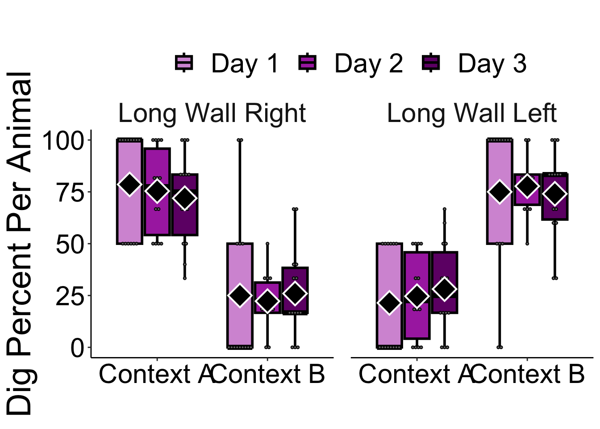
2.1.2 Fig 1E) Boxplots showing distribution of digs in each cup location combining both contexts {Design (4 Dig x S) x (3 Day x S)}
Code
NmRoo = paste0(DirPath,"/", "Fig1E")
Mk.dir(NmRoo)
DT2 <- readRDS(gzcon(url("https://github.com/ManuMi68/MuLaNa2/raw/main/NeuroSpatialData/DigBehavioralData.RDS")))
DTp<-copy(DT2)
# Box Plot
ColPer=c("#D599D7", "#AA33B0","#700075")
Grp<- Grph.2023(
DatP = DTp,
Dvp="Perc", VarX="Dig", VarFill="Day",
LblsP =c("Cluster Quality", "","Dig Percent Per Animal","Location of first dig"),
ylmP =c(0,100),hLin = F,lvIp = 4,GrpSel = c(1:3),wMain=F,
TyGrp="Box", # Bar, Box, Violin, SplitViolin
Wthdot=T, Relleno=T, ResumAd=T,ColPer=ColPer
)
# Descriptive
DTRes<-DTp[,c(N = .N,as.list(summary(Perc))), by=.(Dig,Day)]
write.csv2(DTRes,paste0(NmRoo, "/DigBehavioralData_Descriptive.csv"))
# AOV
a0 <- aov_ez("Subject", "Perc", DTp,
within = c("Dig","Day"))
# Effect size & Mixed
eef<-effectsize::eta_squared(a0, generalized=TRUE)
Mod.1r<-lmer(Perc~Day * Dig + (1|Subject),data=DTp)
# Pos Hoc
# Defines orthogonal contrasts from a prioristic perspective
custom <- list(`CG vs NF` = c(1, 1,-1,-1),
`C vs G` = c(1,-1, 0, 0),
`N vs F` = c(0, 0, 1,-1)
)
PosH.4w = PosHocAut(a0, Mod.1r, "Dig|Day", c("Day","emmean"), custom=custom)
# Results
cat("Data Structure:\n");
str(DTp) # Data File
cat("---------------------\n");
kableTabl(DTp,"Data", "")
cat("---------------------\n");
kableTabl(ezPrecis(DTp),"Design Structure", "")
cat("---------------------\n");
kableTabl(DTRes,"Descriptive", "")
cat("Omnibus AOV:\n")
a0
cat("---------------------\n");
cat("Pos Hoc Simple Effects:\n")
PosH.4w$PosHocMM
#kableTabl(PosH.4w$PosHocMM,"Pos Hoc Simple Effects", "")
cat("---------------------\n");
kableTabl(PosH.4w$Means,"Descrptive & CI-95%", "")
cat("---------------------\n");
cat("Exploratory Analysis:\n");
plot(Grp) # Exploratory AnalysisData Structure:
Classes 'data.table' and 'data.frame': 168 obs. of 5 variables:
$ Day : Factor w/ 3 levels "Day 1","Day 2",..: 1 1 1 1 2 2 2 2 3 3 ...
$ Subject: Factor w/ 14 levels "AK42","AK74",..: 1 1 1 1 1 1 1 1 1 1 ...
$ Dig : Factor w/ 4 levels "Correct","Geo",..: 1 2 3 4 1 2 3 4 1 2 ...
$ N : int 2 2 0 0 5 2 3 2 3 5 ...
$ Perc : num 50 50 0 0 41.7 ...
- attr(*, ".internal.selfref")=<externalptr>
- attr(*, "sorted")= chr [1:3] "Subject" "Day" "Dig"
---------------------| Day | Subject | Dig | N | Perc |
|---|---|---|---|---|
| Day 1 | AK42 | Correct | 2 | 50.0000 |
| Day 1 | AK42 | Geo | 2 | 50.0000 |
| Day 1 | AK42 | Near | 0 | 0.0000 |
| Day 1 | AK42 | Far | 0 | 0.0000 |
| Day 2 | AK42 | Correct | 5 | 41.6667 |
| Day 2 | AK42 | Geo | 2 | 16.6667 |
| Day 2 | AK42 | Near | 3 | 25.0000 |
| Day 2 | AK42 | Far | 2 | 16.6667 |
| Day 3 | AK42 | Correct | 3 | 25.0000 |
| Day 3 | AK42 | Geo | 5 | 41.6667 |
| Day 3 | AK42 | Near | 1 | 8.3333 |
| Day 3 | AK42 | Far | 3 | 25.0000 |
| Day 1 | AK74 | Correct | 0 | 0.0000 |
| Day 1 | AK74 | Geo | 3 | 75.0000 |
| Day 1 | AK74 | Near | 0 | 0.0000 |
| Day 1 | AK74 | Far | 1 | 25.0000 |
| Day 2 | AK74 | Correct | 6 | 50.0000 |
| Day 2 | AK74 | Geo | 2 | 16.6667 |
| Day 2 | AK74 | Near | 1 | 8.3333 |
| Day 2 | AK74 | Far | 3 | 25.0000 |
| Day 3 | AK74 | Correct | 4 | 33.3333 |
| Day 3 | AK74 | Geo | 4 | 33.3333 |
| Day 3 | AK74 | Near | 4 | 33.3333 |
| Day 3 | AK74 | Far | 0 | 0.0000 |
| Day 1 | CMG087 | Correct | 2 | 50.0000 |
| Day 1 | CMG087 | Geo | 2 | 50.0000 |
| Day 1 | CMG087 | Near | 0 | 0.0000 |
| Day 1 | CMG087 | Far | 0 | 0.0000 |
| Day 2 | CMG087 | Correct | 3 | 37.5000 |
| Day 2 | CMG087 | Geo | 3 | 37.5000 |
| Day 2 | CMG087 | Near | 1 | 12.5000 |
| Day 2 | CMG087 | Far | 1 | 12.5000 |
| Day 3 | CMG087 | Correct | 4 | 33.3333 |
| Day 3 | CMG087 | Geo | 4 | 33.3333 |
| Day 3 | CMG087 | Near | 3 | 25.0000 |
| Day 3 | CMG087 | Far | 1 | 8.3333 |
| Day 1 | CMG089 | Correct | 1 | 25.0000 |
| Day 1 | CMG089 | Geo | 2 | 50.0000 |
| Day 1 | CMG089 | Near | 0 | 0.0000 |
| Day 1 | CMG089 | Far | 1 | 25.0000 |
| Day 2 | CMG089 | Correct | 7 | 63.6364 |
| Day 2 | CMG089 | Geo | 2 | 18.1818 |
| Day 2 | CMG089 | Near | 0 | 0.0000 |
| Day 2 | CMG089 | Far | 2 | 18.1818 |
| Day 3 | CMG089 | Correct | 4 | 36.3636 |
| Day 3 | CMG089 | Geo | 3 | 27.2727 |
| Day 3 | CMG089 | Near | 2 | 18.1818 |
| Day 3 | CMG089 | Far | 2 | 18.1818 |
| Day 1 | CMG129 | Correct | 1 | 25.0000 |
| Day 1 | CMG129 | Geo | 3 | 75.0000 |
| Day 1 | CMG129 | Near | 0 | 0.0000 |
| Day 1 | CMG129 | Far | 0 | 0.0000 |
| Day 2 | CMG129 | Correct | 4 | 50.0000 |
| Day 2 | CMG129 | Geo | 1 | 12.5000 |
| Day 2 | CMG129 | Near | 1 | 12.5000 |
| Day 2 | CMG129 | Far | 2 | 25.0000 |
| Day 3 | CMG129 | Correct | 4 | 33.3333 |
| Day 3 | CMG129 | Geo | 2 | 16.6667 |
| Day 3 | CMG129 | Near | 2 | 16.6667 |
| Day 3 | CMG129 | Far | 4 | 33.3333 |
| Day 1 | CMG154 | Correct | 1 | 33.3333 |
| Day 1 | CMG154 | Geo | 1 | 33.3333 |
| Day 1 | CMG154 | Near | 0 | 0.0000 |
| Day 1 | CMG154 | Far | 1 | 33.3333 |
| Day 2 | CMG154 | Correct | 4 | 57.1429 |
| Day 2 | CMG154 | Geo | 3 | 42.8571 |
| Day 2 | CMG154 | Near | 0 | 0.0000 |
| Day 2 | CMG154 | Far | 0 | 0.0000 |
| Day 3 | CMG154 | Correct | 1 | 14.2857 |
| Day 3 | CMG154 | Geo | 4 | 57.1429 |
| Day 3 | CMG154 | Near | 0 | 0.0000 |
| Day 3 | CMG154 | Far | 2 | 28.5714 |
| Day 1 | CMG159 | Correct | 1 | 25.0000 |
| Day 1 | CMG159 | Geo | 2 | 50.0000 |
| Day 1 | CMG159 | Near | 1 | 25.0000 |
| Day 1 | CMG159 | Far | 0 | 0.0000 |
| Day 2 | CMG159 | Correct | 6 | 54.5455 |
| Day 2 | CMG159 | Geo | 2 | 18.1818 |
| Day 2 | CMG159 | Near | 1 | 9.0909 |
| Day 2 | CMG159 | Far | 2 | 18.1818 |
| Day 3 | CMG159 | Correct | 5 | 41.6667 |
| Day 3 | CMG159 | Geo | 3 | 25.0000 |
| Day 3 | CMG159 | Near | 1 | 8.3333 |
| Day 3 | CMG159 | Far | 3 | 25.0000 |
| Day 1 | CMG161 | Correct | 2 | 50.0000 |
| Day 1 | CMG161 | Geo | 1 | 25.0000 |
| Day 1 | CMG161 | Near | 1 | 25.0000 |
| Day 1 | CMG161 | Far | 0 | 0.0000 |
| Day 2 | CMG161 | Correct | 3 | 37.5000 |
| Day 2 | CMG161 | Geo | 2 | 25.0000 |
| Day 2 | CMG161 | Near | 3 | 37.5000 |
| Day 2 | CMG161 | Far | 0 | 0.0000 |
| Day 3 | CMG161 | Correct | 6 | 50.0000 |
| Day 3 | CMG161 | Geo | 1 | 8.3333 |
| Day 3 | CMG161 | Near | 2 | 16.6667 |
| Day 3 | CMG161 | Far | 3 | 25.0000 |
| Day 1 | CMG162 | Correct | 1 | 25.0000 |
| Day 1 | CMG162 | Geo | 1 | 25.0000 |
| Day 1 | CMG162 | Near | 0 | 0.0000 |
| Day 1 | CMG162 | Far | 2 | 50.0000 |
| Day 2 | CMG162 | Correct | 5 | 41.6667 |
| Day 2 | CMG162 | Geo | 3 | 25.0000 |
| Day 2 | CMG162 | Near | 2 | 16.6667 |
| Day 2 | CMG162 | Far | 2 | 16.6667 |
| Day 3 | CMG162 | Correct | 8 | 66.6667 |
| Day 3 | CMG162 | Geo | 2 | 16.6667 |
| Day 3 | CMG162 | Near | 2 | 16.6667 |
| Day 3 | CMG162 | Far | 0 | 0.0000 |
| Day 1 | CMG169 | Correct | 3 | 75.0000 |
| Day 1 | CMG169 | Geo | 0 | 0.0000 |
| Day 1 | CMG169 | Near | 1 | 25.0000 |
| Day 1 | CMG169 | Far | 0 | 0.0000 |
| Day 2 | CMG169 | Correct | 4 | 66.6667 |
| Day 2 | CMG169 | Geo | 2 | 33.3333 |
| Day 2 | CMG169 | Near | 0 | 0.0000 |
| Day 2 | CMG169 | Far | 0 | 0.0000 |
| Day 3 | CMG169 | Correct | 7 | 63.6364 |
| Day 3 | CMG169 | Geo | 0 | 0.0000 |
| Day 3 | CMG169 | Near | 2 | 18.1818 |
| Day 3 | CMG169 | Far | 2 | 18.1818 |
| Day 1 | HG1 | Correct | 3 | 75.0000 |
| Day 1 | HG1 | Geo | 1 | 25.0000 |
| Day 1 | HG1 | Near | 0 | 0.0000 |
| Day 1 | HG1 | Far | 0 | 0.0000 |
| Day 2 | HG1 | Correct | 3 | 50.0000 |
| Day 2 | HG1 | Geo | 2 | 33.3333 |
| Day 2 | HG1 | Near | 0 | 0.0000 |
| Day 2 | HG1 | Far | 1 | 16.6667 |
| Day 3 | HG1 | Correct | 7 | 87.5000 |
| Day 3 | HG1 | Geo | 1 | 12.5000 |
| Day 3 | HG1 | Near | 0 | 0.0000 |
| Day 3 | HG1 | Far | 0 | 0.0000 |
| Day 1 | JJ9 | Correct | 0 | 0.0000 |
| Day 1 | JJ9 | Geo | 1 | 25.0000 |
| Day 1 | JJ9 | Near | 2 | 50.0000 |
| Day 1 | JJ9 | Far | 1 | 25.0000 |
| Day 2 | JJ9 | Correct | 6 | 50.0000 |
| Day 2 | JJ9 | Geo | 2 | 16.6667 |
| Day 2 | JJ9 | Near | 4 | 33.3333 |
| Day 2 | JJ9 | Far | 0 | 0.0000 |
| Day 3 | JJ9 | Correct | 8 | 66.6667 |
| Day 3 | JJ9 | Geo | 3 | 25.0000 |
| Day 3 | JJ9 | Near | 0 | 0.0000 |
| Day 3 | JJ9 | Far | 1 | 8.3333 |
| Day 1 | K1 | Correct | 1 | 25.0000 |
| Day 1 | K1 | Geo | 2 | 50.0000 |
| Day 1 | K1 | Near | 1 | 25.0000 |
| Day 1 | K1 | Far | 0 | 0.0000 |
| Day 2 | K1 | Correct | 6 | 50.0000 |
| Day 2 | K1 | Geo | 4 | 33.3333 |
| Day 2 | K1 | Near | 1 | 8.3333 |
| Day 2 | K1 | Far | 1 | 8.3333 |
| Day 3 | K1 | Correct | 7 | 63.6364 |
| Day 3 | K1 | Geo | 1 | 9.0909 |
| Day 3 | K1 | Near | 3 | 27.2727 |
| Day 3 | K1 | Far | 0 | 0.0000 |
| Day 1 | MG1 | Correct | 2 | 50.0000 |
| Day 1 | MG1 | Geo | 2 | 50.0000 |
| Day 1 | MG1 | Near | 0 | 0.0000 |
| Day 1 | MG1 | Far | 0 | 0.0000 |
| Day 2 | MG1 | Correct | 8 | 66.6667 |
| Day 2 | MG1 | Geo | 3 | 25.0000 |
| Day 2 | MG1 | Near | 0 | 0.0000 |
| Day 2 | MG1 | Far | 1 | 8.3333 |
| Day 3 | MG1 | Correct | 7 | 58.3333 |
| Day 3 | MG1 | Geo | 4 | 33.3333 |
| Day 3 | MG1 | Near | 1 | 8.3333 |
| Day 3 | MG1 | Far | 0 | 0.0000 |
| Note: | ||||
---------------------
Data frame dimensions: 168 rows, 5 columns| type | missing | values | min | max | |
|---|---|---|---|---|---|
| Day | factor | 0 | 3 | Day 1 | Day 3 |
| Subject | factor | 0 | 14 | AK42 | MG1 |
| Dig | factor | 0 | 4 | Correct | Far |
| N | numeric | 0 | 9 | 0 | 8 |
| Perc | numeric | 0 | 23 | 0 | 87.5 |
| Note: | |||||
---------------------| Dig | Day | N | Min. | 1st Qu. | Median | Mean | 3rd Qu. | Max. |
|---|---|---|---|---|---|---|---|---|
| Correct | Day 1 | 14 | 0.0000 | 25.0000 | 29.1667 | 36.3095 | 50.0000 | 75.0000 |
| Geo | Day 1 | 14 | 0.0000 | 25.0000 | 50.0000 | 41.6667 | 50.0000 | 75.0000 |
| Near | Day 1 | 14 | 0.0000 | 0.0000 | 0.0000 | 10.7143 | 25.0000 | 50.0000 |
| Far | Day 1 | 14 | 0.0000 | 0.0000 | 0.0000 | 11.3095 | 25.0000 | 50.0000 |
| Correct | Day 2 | 14 | 37.5000 | 43.7500 | 50.0000 | 51.2137 | 56.4935 | 66.6667 |
| Geo | Day 2 | 14 | 12.5000 | 17.0455 | 25.0000 | 25.3015 | 33.3333 | 42.8571 |
| Near | Day 2 | 14 | 0.0000 | 0.0000 | 8.7121 | 11.6613 | 15.6250 | 37.5000 |
| Far | Day 2 | 14 | 0.0000 | 2.0833 | 14.5833 | 11.8236 | 17.8030 | 25.0000 |
| Correct | Day 3 | 14 | 14.2857 | 33.3333 | 45.8333 | 48.1254 | 63.6364 | 87.5000 |
| Geo | Day 3 | 14 | 0.0000 | 13.5417 | 25.0000 | 24.2386 | 33.3333 | 57.1429 |
| Near | Day 3 | 14 | 0.0000 | 8.3333 | 16.6667 | 14.0693 | 18.1818 | 33.3333 |
| Far | Day 3 | 14 | 0.0000 | 0.0000 | 13.2576 | 13.5668 | 25.0000 | 33.3333 |
| Note: | ||||||||
Omnibus AOV:
Anova Table (Type 3 tests)
Response: Perc
Effect df MSE F ges p.value
1 Dig 2.18, 28.36 503.37 29.30 *** .466 <.001
2 Day 2, 26 0.00 0.00 <.001 >.999
3 Dig:Day 4.35, 56.53 400.92 2.60 * .109 .042
---
Signif. codes: 0 '***' 0.001 '**' 0.01 '*' 0.05 '+' 0.1 ' ' 1
Sphericity correction method: GG
---------------------
Pos Hoc Simple Effects:
contrast Day estimate SE df t.ratio pHolm pRom
1: Correct - Geo Day.1 -5.36 10.2102 13 -0.52 >.999 >.999
2: Correct - Near Day.1 25.60 8.3088 13 3.08 .0351 * .0345 *
3: Correct - Far Day.1 25.00 9.4491 13 2.65 .0605 . .0598 .
4: Geo - Near Day.1 30.95 8.3529 13 3.71 .0132 * .0130 *
5: Geo - Far Day.1 30.36 7.4948 13 4.05 .0083 ** .0081 **
6: Near - Far Day.1 -0.60 6.6221 13 -0.09 >.999 >.999
7: Correct - Geo Day.2 25.91 3.5414 13 7.32 <.0001 *** <.0001 ***
8: Correct - Near Day.2 39.55 5.5234 13 7.16 <.0001 *** <.0001 ***
9: Correct - Far Day.2 39.39 3.8211 13 10.31 <.0001 *** <.0001 ***
10: Geo - Near Day.2 13.64 4.9084 13 2.78 .0313 * .0313 *
11: Geo - Far Day.2 13.48 4.3274 13 3.11 .0246 * .0243 *
12: Near - Far Day.2 -0.16 4.5579 13 -0.04 .9721 .9721
13: Correct - Geo Day.3 23.89 8.7742 13 2.72 .0697 . .0686 .
14: Correct - Near Day.3 34.06 6.4763 13 5.26 .0009 *** .0009 ***
15: Correct - Far Day.3 34.56 7.9405 13 4.35 .0039 ** .0038 **
16: Geo - Near Day.3 10.17 5.4949 13 1.85 .1741 .1741
17: Geo - Far Day.3 10.67 4.7522 13 2.25 .1282 .1267
18: Near - Far Day.3 0.50 4.8408 13 0.10 .9189 .9189
---------------------| Dig | Day | emmean | SE | df | lower.CL | upper.CL |
|---|---|---|---|---|---|---|
| Near | Day.1 | 10.71 | 4.3176 | 13 | 1.39 | 20.04 |
| Far | Day.1 | 11.31 | 4.5061 | 13 | 1.57 | 21.04 |
| Correct | Day.1 | 36.31 | 6.2145 | 13 | 22.88 | 49.74 |
| Geo | Day.1 | 41.67 | 5.5249 | 13 | 29.73 | 53.60 |
| Near | Day.2 | 11.66 | 3.3565 | 13 | 4.41 | 18.91 |
| Far | Day.2 | 11.82 | 2.4388 | 13 | 6.55 | 17.09 |
| Geo | Day.2 | 25.30 | 2.5025 | 13 | 19.90 | 30.71 |
| Correct | Day.2 | 51.21 | 2.6144 | 13 | 45.57 | 56.86 |
| Far | Day.3 | 13.57 | 3.3362 | 13 | 6.36 | 20.77 |
| Near | Day.3 | 14.07 | 2.7849 | 13 | 8.05 | 20.09 |
| Geo | Day.3 | 24.24 | 4.0378 | 13 | 15.52 | 32.96 |
| Correct | Day.3 | 48.13 | 5.4183 | 13 | 36.42 | 59.83 |
| Note: | ||||||
---------------------
Exploratory Analysis: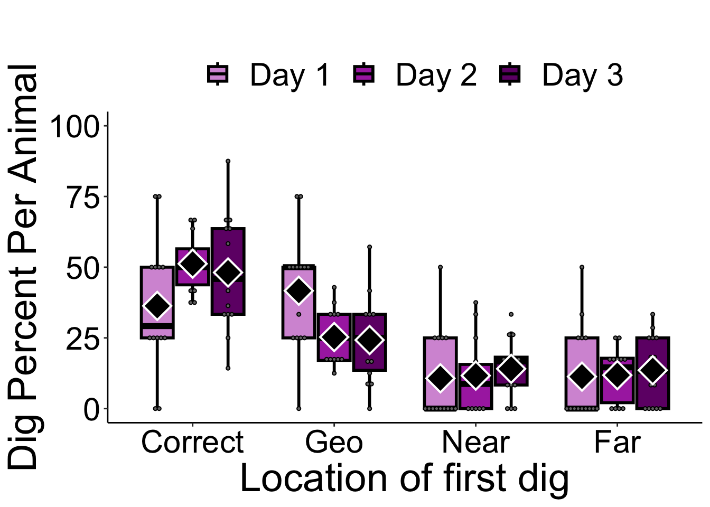
2.1.3 Fig 1F) Cumulative proportion of Bayes Factor (BF) on days 1 to 3 per context
Code
NmRoo = paste0(DirPath,"/", "Fig1F")
Mk.dir(NmRoo)
ValsBF2=seq(-2, 2, by=1.0)
logEs10=F
if (logEs10) ValsBF=sort(c(seq(-2,2,by=.5),-log10(3),log10(3),-.01))
if (!logEs10) ValsBF=sort(c(seq(-2,2,by=.5),-log(3),log(3),-.01))
# unique(DT.BF$Subj) AK42 AK74 JJ9 HG1 K1 MG1 CMG159 CMG089 CMG129 CMG154 CMG162 CMG161 CMG169 CMG087
Nsj=14; LgSess=12
nFi=Nsj*LgSess*2+Nsj*4 # Check Files: 392
DT.BF <- readRDS(gzcon(url("https://github.com/ManuMi68/MuLaNa2/raw/main/NeuroSpatialData/DigBehavioralDataForBF.RDS")))
# Process the data to test:
# the alternative model (MAlt) that animals preferentially dug on the rewarded axis
# in each context (long wall right in Context A and long wall left in Context B) vs.
# the null model (Mnull) that animals dug by chance (50%).
# Note especially line: .[,BF:=BayNormRam(z,N,li=.5,ls=.9,Nulo=.5),by=list(Group,Day,Subj)]
DT.50<-data.table(copy(DT.BF)) %>%
.[,AxisMM :=Dig] %>% .[,HitsMM :=Dig] %>%
mutate(AxisMM = dplyr::recode(AxisMM, C = "C/G",F = "N/W", G = "C/G", W="N/W")) %>%
mutate(HitsMM = dplyr::recode(HitsMM, C = "1", F = "0", G = "1", W="0")) %>%
mutate(HitsMM = as.numeric(as.character(HitsMM))) %>%
data.table() %>%
.[, data.table(table(Subj,Day,AxisMM)),by=Group] %>%
.[,Perc:=N/sum(N),by=list(Group,Subj,Day)] %>%
.[,zz:=sum(N),by=list(Group,Subj,Day)] %>%
.[AxisMM=="C/G"] %>%
.[,Inter:=interaction(Group,Day)] %>%
dplyr::rename(., z=N) %>%
dplyr::rename(., N=zz) %>%
.[,BF:=BayNormRam(z,N,li=.5,ls=.9,Nulo=.5),by=list(Group,Day,Subj)] %>%
.[,InterBF:=InterpBF(BF),by=list(Group,Day,Subj)] %>%
IfFilterLog(.,Fs = logEs10) %>%
.[, ecdfr := lapply(.SD, function(z) stats::ecdf(z)(z)), .SDcols = "logBF", by = .(Group,Day) ] %>%
mutate(Day=factor(Day)) %>%
dplyr::rename(., Subject=Subj) %>%
as.data.table()
# Overall results and Fig. 1F
Res.50 = MakeBF(DT.50, paste0(NmRoo, "/50Chan"))
Res.50$Global
Res.50$GrpDay$All Group Day BF InterBF logBF
1: Context A Day 1 63.9838 Very strong/Strong 4.1586
2: Context A Day 2 1380.0707 Extreme/Very strong 7.2299
3: Context A Day 3 1036.3003 Extreme/Very strong 6.9434
4: Context B Day 1 65.6244 Very strong/Strong 4.1839
5: Context B Day 2 5444.6652 Extreme/Very strong 8.6024
6: Context B Day 3 5226.0428 Extreme/Very strong 8.5614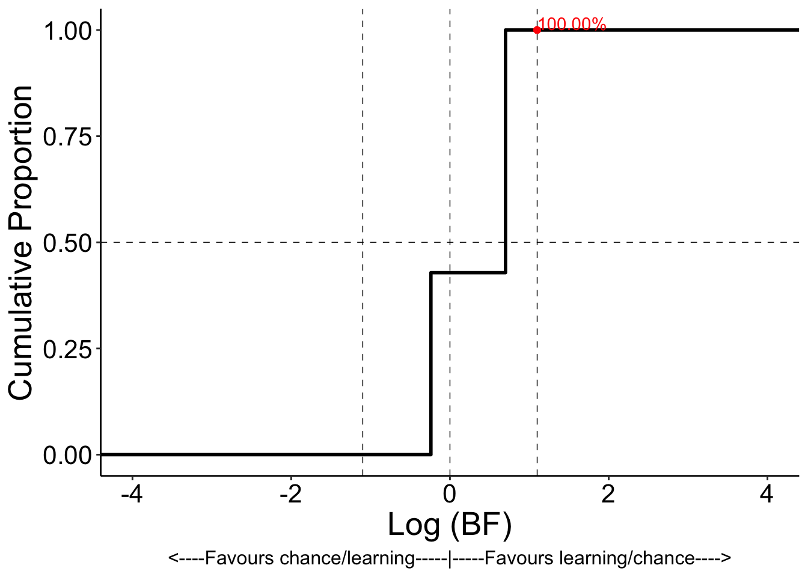

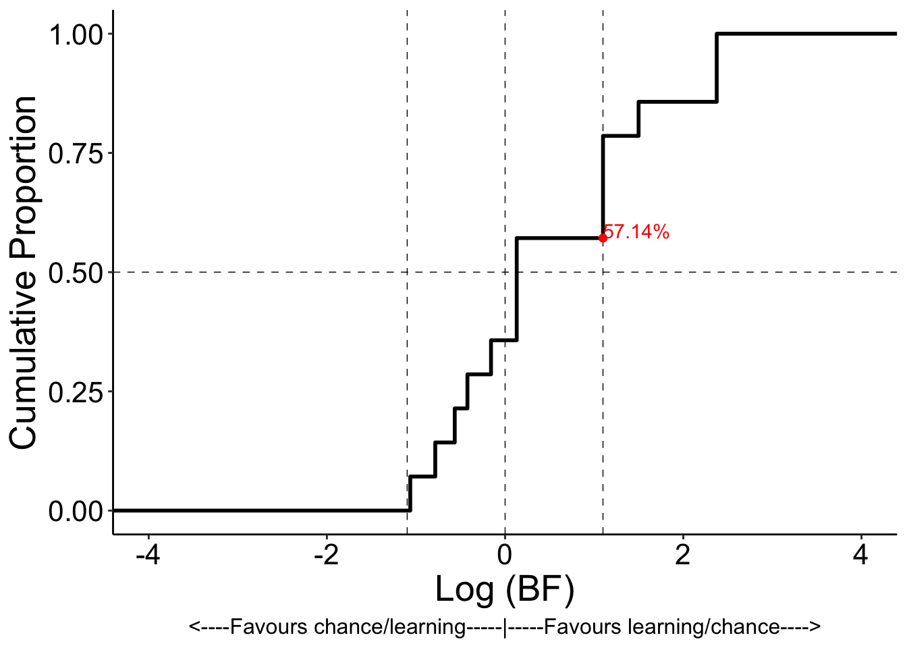
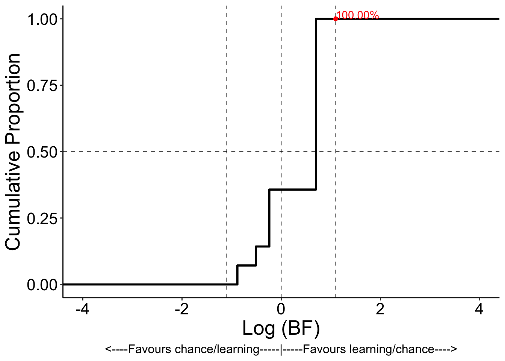
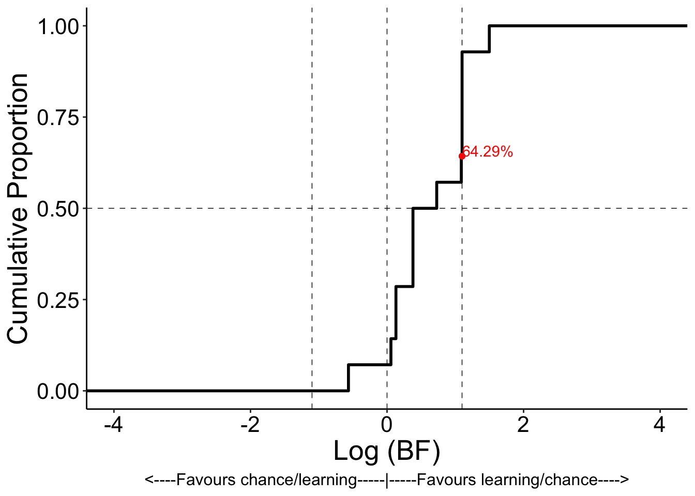
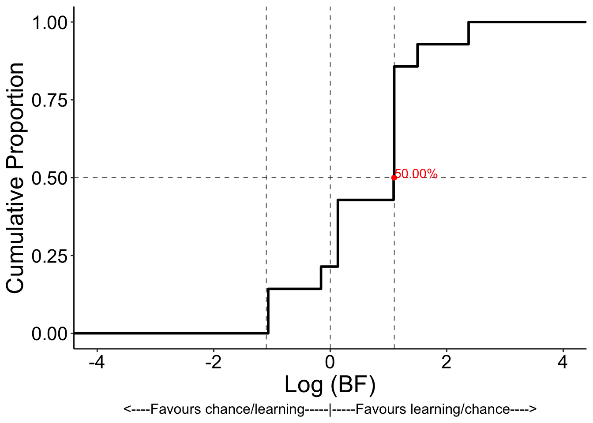
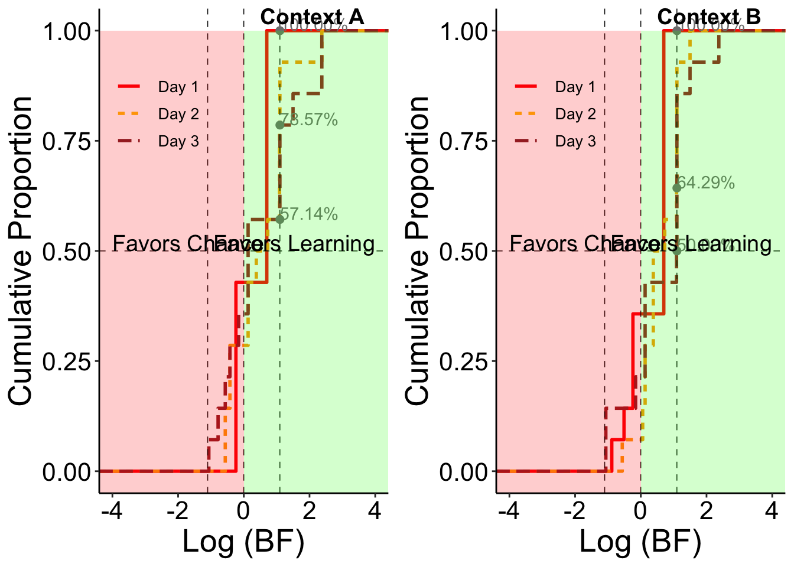
2.1.4 Table S2) Individual Data of Fig.1F)
Code
DT.50[, .(Group,Day,Subject, logBF) ] Group Day Subject logBF
1: Context A Day 1 AK42 0.69979172
2: Context A Day 1 AK74 -0.23995067
3: Context A Day 1 CMG087 0.69979172
4: Context A Day 1 CMG089 -0.23995067
5: Context A Day 1 CMG129 0.69979172
6: Context A Day 1 CMG154 0.69979172
7: Context A Day 1 CMG159 -0.23995067
8: Context A Day 1 CMG161 0.69979172
9: Context A Day 1 CMG162 -0.23995067
10: Context A Day 1 CMG169 -0.23995067
11: Context A Day 1 HG1 0.69979172
12: Context A Day 1 JJ9 -0.23995067
13: Context A Day 1 K1 0.69979172
14: Context A Day 1 MG1 0.69979172
15: Context A Day 2 AK42 0.13052153
16: Context A Day 2 AK74 -0.56508673
17: Context A Day 2 CMG087 0.37986008
18: Context A Day 2 CMG089 1.09900028
19: Context A Day 2 CMG129 -0.42273335
20: Context A Day 2 CMG154 1.08788833
21: Context A Day 2 CMG159 0.72769030
22: Context A Day 2 CMG161 -0.42273335
23: Context A Day 2 CMG162 0.13052153
24: Context A Day 2 CMG169 1.08788833
25: Context A Day 2 HG1 1.08788833
26: Context A Day 2 JJ9 -0.56508673
27: Context A Day 2 K1 1.09900028
28: Context A Day 2 MG1 2.37527119
29: Context A Day 3 AK42 0.13052153
30: Context A Day 3 AK74 2.37527119
31: Context A Day 3 CMG087 -0.56508673
32: Context A Day 3 CMG089 -0.15798023
33: Context A Day 3 CMG129 0.13052153
34: Context A Day 3 CMG154 -0.42273335
35: Context A Day 3 CMG159 0.13052153
36: Context A Day 3 CMG161 -1.06430031
37: Context A Day 3 CMG162 1.09900028
38: Context A Day 3 CMG169 -0.78385994
39: Context A Day 3 HG1 1.49826498
40: Context A Day 3 JJ9 1.09900028
41: Context A Day 3 K1 1.09900028
42: Context A Day 3 MG1 2.37527119
43: Context B Day 1 AK42 0.69979172
44: Context B Day 1 AK74 0.69979172
45: Context B Day 1 CMG087 0.69979172
46: Context B Day 1 CMG089 0.69979172
47: Context B Day 1 CMG129 0.69979172
48: Context B Day 1 CMG154 -0.51082562
49: Context B Day 1 CMG159 0.69979172
50: Context B Day 1 CMG161 -0.23995067
51: Context B Day 1 CMG162 -0.23995067
52: Context B Day 1 CMG169 0.69979172
53: Context B Day 1 HG1 0.69979172
54: Context B Day 1 JJ9 -0.88350091
55: Context B Day 1 K1 -0.23995067
56: Context B Day 1 MG1 0.69979172
57: Context B Day 2 AK42 -0.56508673
58: Context B Day 2 AK74 1.09900028
59: Context B Day 2 CMG087 0.37986008
60: Context B Day 2 CMG089 0.72769030
61: Context B Day 2 CMG129 0.37986008
62: Context B Day 2 CMG154 1.49826498
63: Context B Day 2 CMG159 0.13052153
64: Context B Day 2 CMG161 0.37986008
65: Context B Day 2 CMG162 0.13052153
66: Context B Day 2 CMG169 1.08788833
67: Context B Day 2 HG1 0.05701025
68: Context B Day 2 JJ9 1.09900028
69: Context B Day 2 K1 1.09900028
70: Context B Day 2 MG1 1.09900028
71: Context B Day 3 AK42 0.13052153
72: Context B Day 3 AK74 -1.06430031
73: Context B Day 3 CMG087 1.09900028
74: Context B Day 3 CMG089 0.13052153
75: Context B Day 3 CMG129 -1.06430031
76: Context B Day 3 CMG154 1.08788833
77: Context B Day 3 CMG159 0.13052153
78: Context B Day 3 CMG161 1.09900028
79: Context B Day 3 CMG162 1.09900028
80: Context B Day 3 CMG169 1.09900028
81: Context B Day 3 HG1 1.49826498
82: Context B Day 3 JJ9 2.37527119
83: Context B Day 3 K1 -0.15798023
84: Context B Day 3 MG1 1.09900028
Group Day Subject logBF2.1.5 Fig 1G) Cumulative proportion of individual Bayes Factors (BF) across days 1 to 3 combining contexts
Code
NmRoo = paste0(DirPath,"/", "Fig1G")
Mk.dir(NmRoo)
ValsBF2=seq(-2, 2, by=1.0)
logEs10=F
if (logEs10) ValsBF=sort(c(seq(-2,2,by=.5),-log10(3),log10(3),-.01))
if (!logEs10) ValsBF=sort(c(seq(-2,2,by=.5),-log(3),log(3),-.01))
# unique(DT.BF$Subj) AK42 AK74 JJ9 HG1 K1 MG1 CMG159 CMG089 CMG129 CMG154 CMG162 CMG161 CMG169 CMG087
Nsj=14; LgSess=12
nFi=Nsj*LgSess*2+Nsj*4 # Check Files: 392
DT.BF <- readRDS(gzcon(url("https://github.com/ManuMi68/MuLaNa2/raw/main/NeuroSpatialData/DigBehavioralDataForBF.RDS")))
# Process the data to test:
# the alternative model (MAlt) that animals dug in the rewarded cup location vs.
# the null model (Mnull) that animals dug by chance (25%).
# Note especially line: .[,BF:=BayNormRam(z,N,li=.25,ls=.9,Nulo=.25),by=list(Day,Subj)]
DT.25.NoCx<-data.table(copy(DT.BF)) %>%
.[,AxisMM :=Dig] %>% .[,HitsMM :=Dig] %>%
mutate(AxisMM = dplyr::recode(AxisMM, C = "C/G",F = "N/W", G = "N/W", W="N/W")) %>%
mutate(HitsMM = dplyr::recode(HitsMM, C = "1", F = "0", G = "0", W="0")) %>%
mutate(HitsMM = as.numeric(as.character(HitsMM))) %>%
data.table() %>%
.[, data.table(table(Subj,AxisMM)),by=Day] %>%
.[,Perc:=N/sum(N),by=list(Day,Subj)] %>%
.[,zz:=sum(N),by=list(Day, Subj)] %>%
.[AxisMM=="C/G"] %>%
.[,Inter:=Day] %>%
dplyr::rename(., z=N) %>%
dplyr::rename(., N=zz) %>%
.[,BF:=BayNormRam(z,N,li=.25,ls=.9,Nulo=.25),by=list(Day,Subj)] %>%
.[,InterBF:=InterpBF(BF),by=list(Day,Subj)] %>%
IfFilterLog2(.,Fs = logEs10) %>%
.[, ecdfr := lapply(.SD, function(z) stats::ecdf(z)(z)), .SDcols = "logBF", by = .(Day) ] %>%
mutate(Day=factor(Day)) %>%
dplyr::rename(., Subject=Subj) %>%
as.data.table()
# Overall results and Fig. 1G
Res.25.NoCx = MakeBFNoCx(DT.25.NoCx, paste0(NmRoo, "/25Chan_FolCx"))
Res.25.NoCx$Global
Res.25.NoCx$GrpDay Day BF InterBF logBF
1: Day 1 0.0736 Contray Strong/Positive -2.6096
2: Day 2 3465056.9690 Extreme/Very strong 15.0582
3: Day 3 47194756.6467 Extreme/Very strong 17.6698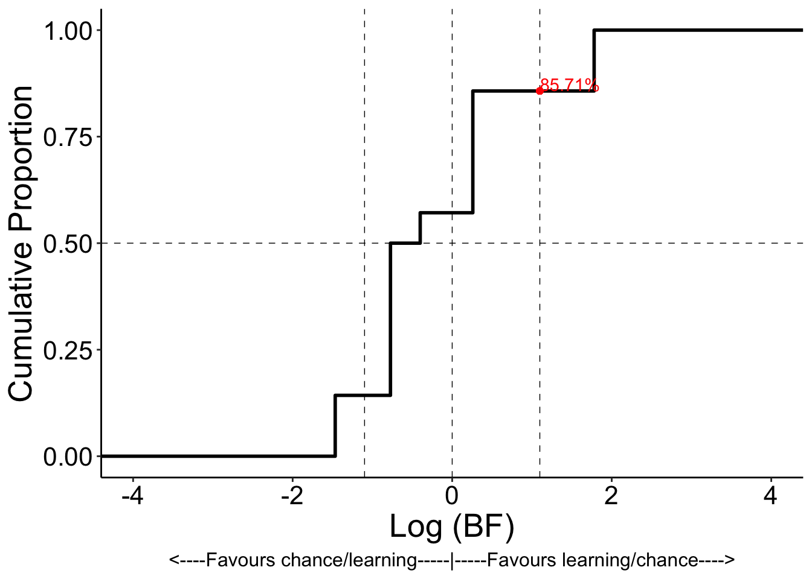
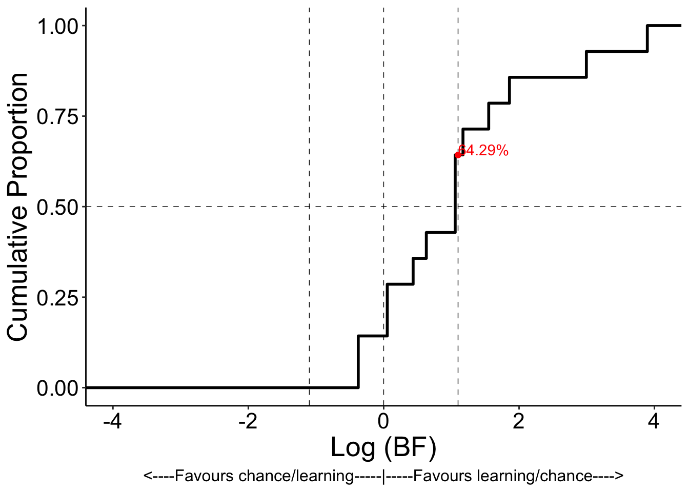
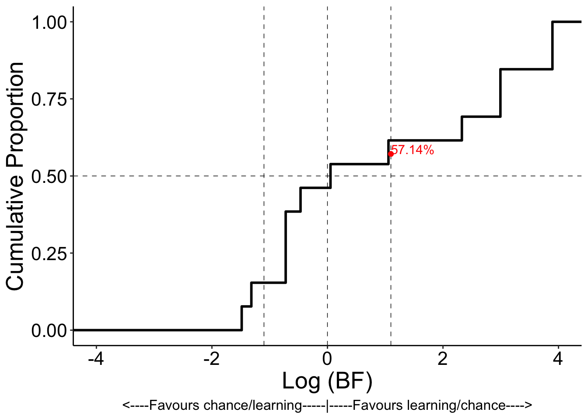
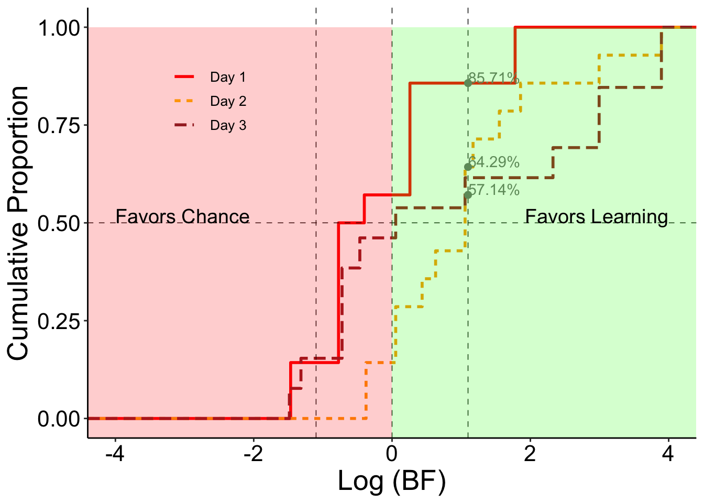
2.1.6 Table S3) Individual Data of Fig.1G).
Code
DT.25.NoCx[, .(Day,Subject,logBF) ] Day Subject logBF
1: Day 1 AK42 0.25866970
2: Day 1 AK74 -1.46637921
3: Day 1 CMG087 0.25866970
4: Day 1 CMG089 -0.77391707
5: Day 1 CMG129 -0.77391707
6: Day 1 CMG154 -0.40091990
7: Day 1 CMG159 -0.77391707
8: Day 1 CMG161 0.25866970
9: Day 1 CMG162 -0.77391707
10: Day 1 CMG169 1.77948894
11: Day 1 HG1 1.77948894
12: Day 1 JJ9 -1.46637921
13: Day 1 K1 -0.77391707
14: Day 1 MG1 0.25866970
15: Day 2 AK42 0.05289697
16: Day 2 AK74 1.05628831
17: Day 2 CMG087 -0.37576995
18: Day 2 CMG089 2.99443617
19: Day 2 CMG129 0.62986686
20: Day 2 CMG154 1.17136075
21: Day 2 CMG159 1.55158337
22: Day 2 CMG161 -0.37576995
23: Day 2 CMG162 0.05289697
24: Day 2 CMG169 1.85803072
25: Day 2 HG1 0.43496098
26: Day 2 JJ9 1.05628831
27: Day 2 K1 1.05628831
28: Day 2 MG1 3.89488181
29: Day 3 AK42 -1.31719395
30: Day 3 AK74 -0.72281060
31: Day 3 CMG087 -0.72281060
32: Day 3 CMG089 -0.46582066
33: Day 3 CMG129 -0.72281060
34: Day 3 CMG154 -1.48435756
35: Day 3 CMG159 0.05289697
36: Day 3 CMG161 1.05628831
37: Day 3 CMG162 3.89488181
38: Day 3 CMG169 2.99443617
39: Day 3 HG1 5.89062408
40: Day 3 JJ9 3.89488181
41: Day 3 K1 2.99443617
42: Day 3 MG1 2.32715201
Day Subject logBF3 2) Place field alignment to spatial geometry persists over days and predicts digging behavior
3.1 Figure 2. Place field alignment to spatial geometry persists over days.
Figure 2. Place field alignment to spatial geometry persists over days. A) Example place cell maps from two simultaneously recorded cells on day 3 from electrophysiology (left) and calciumimaging (right) recordings. B) Quantification of best match rotation (BMR) between trials for a cell. Place cells’ maps are compressed to squares (indicated by the dashed lines and arrow on top of each map) and compared across all trials to determine which rotation yields the highest correlation between each pair of maps. For each trial comparison, one of the maps is rotated 0°, 90°, 180°, and 270°. The highest pixel to pixel cross-correlation between the non-rotated trial A map and rotated trial B map determines the BMR for that trial comparison. C) Distribution of bestmatch rotations across days using electrophysiological (N = 7 on day 1 and 6 on days 2 and 3, left) and calcium-imaging (N = 5, right) recordings, computed as the proportion of pairwise trial comparisons for which each rotation yielded the best match, averaged per animal. D) Schematic of heading prediction method using the center-out measure (see methods). For each place field, the angles from the center of the arena to the center of mass of the field was measured. The center-out measure from Corr (C, teal) and Geo (G, red) trials were used to train a Support Vector Machine (SVM), leaving the trial to be predicted out (gray). E) Heading prediction accuracy using center-out measure. Histograms represent mean ± standard error of the mean (SEM), circles represent individual animal points. Red dashed line represents chance level (50%). Asterisks (*) indicate p < 0.05.
3.1.1 Fig.2C-left) Distribution of bestmatch rotations across days using electrophysiological recordings {Design (3 Day x S) x (4 Rotaton x S)}
Code
NmRoo = paste0(DirPath,"/", "Fig2CLeft ")
Mk.dir(NmRoo)
DT3 <- readRDS(gzcon(url("https://github.com/ManuMi68/MuLaNa2/raw/main/NeuroSpatialData/Tetrodes.RDS")))
DTp<-copy(DT3)
# Box Plot
ColPer=c("#D599D7", "#AA33B0","#700075")
Grp<- Grph.2023(
DatP = DTp,
Dvp="Proportion", VarX="Rotation",VarFill="Day",
LblsP =c("Cluster Quality", "","Percent Trial Pairs","Best Match Rotation"),
ylmP =c(0,.6),hLin = F,lvIp = 4,GrpSel = c(1:3),wMain=F,
TyGrp="Box", # Bar, Box, Violin, SplitViolin
Wthdot=T, Relleno=T, ResumAd=T,ColPer=ColPer
)
# Descriptive
DTRes<-DTp[,c(N = .N,as.list(summary(Proportion))), by=.(Rotation,Day)]
write.csv2(DTRes,paste0(NmRoo, "/Tetrodes_Descriptive.csv"))
# AOV
a0 <- aov_ez("Subject", "Proportion", DTp,
within = c("Rotation","Day"))
# Effect size & Mixed
eef<-effectsize::eta_squared(a0, generalized=TRUE)
Mod.1r<-lmer(Proportion~Day * Rotation + (1|Subject),data=DTp)
# Pos Hoc
# Defines orthogonal contrasts from a prioristic perspective
custom <- list(`0.180vs90.270` = c(1,-1, 1,-1),
`0vs180` = c(1, 0,-1, 0),
`90vs270` = c(0, 1, 0,-1)
)
PosH.4w = PosHocAut(Mod.1r, Mod.1r, "Rotation", c("Rotation","emmean"), custom=custom)
# Results
cat("Data Structure:\n");
str(DTp) # Data File
cat("---------------------\n");
kableTabl(DTp,"Data", "")
cat("---------------------\n");
kableTabl(ezPrecis(DTp),"Design Structure", "")
cat("---------------------\n");
kableTabl(DTRes,"Descriptive", "")
cat("Omnibus AOV:\n")
a0
cat("---------------------\n");
cat("Pos Hoc Simple Effects:\n")
PosH.4w$PosHocMM
#kableTabl(PosH.4w$PosHocMM,"Pos Hoc Simple Effects", "")
cat("---------------------\n");
kableTabl(PosH.4w$Means,"Descrptive & CI-95%", "")
cat("---------------------\n");
cat("Exploratory Analysis:\n");
plot(Grp) # Exploratory AnalysisData Structure:
Classes 'data.table' and 'data.frame': 72 obs. of 4 variables:
$ Subject : Factor w/ 6 levels "AK42_CA1","AK74_CA1",..: 1 1 1 1 2 2 2 2 3 3 ...
$ Day : Factor w/ 3 levels "Day 1","Day 2",..: 1 1 1 1 1 1 1 1 1 1 ...
$ Rotation : Factor w/ 4 levels "0º","90º","180º",..: 1 2 3 4 1 2 3 4 1 2 ...
$ Proportion: num 0.505 0.11 0.298 0.087 0.468 ...
- attr(*, ".internal.selfref")=<externalptr>
---------------------| Subject | Day | Rotation | Proportion |
|---|---|---|---|
| AK42_CA1 | Day 1 | 0º | 0.5053 |
| AK42_CA1 | Day 1 | 90º | 0.1099 |
| AK42_CA1 | Day 1 | 180º | 0.2977 |
| AK42_CA1 | Day 1 | 270º | 0.0870 |
| AK74_CA1 | Day 1 | 0º | 0.4684 |
| AK74_CA1 | Day 1 | 90º | 0.1684 |
| AK74_CA1 | Day 1 | 180º | 0.1895 |
| AK74_CA1 | Day 1 | 270º | 0.1737 |
| CMG159_recut | Day 1 | 0º | 0.2638 |
| CMG159_recut | Day 1 | 90º | 0.1991 |
| CMG159_recut | Day 1 | 180º | 0.2686 |
| CMG159_recut | Day 1 | 270º | 0.2686 |
| JJ9_CA1 | Day 1 | 0º | 0.3834 |
| JJ9_CA1 | Day 1 | 90º | 0.1503 |
| JJ9_CA1 | Day 1 | 180º | 0.3472 |
| JJ9_CA1 | Day 1 | 270º | 0.1192 |
| MG1 | Day 1 | 0º | 0.2544 |
| MG1 | Day 1 | 90º | 0.2316 |
| MG1 | Day 1 | 180º | 0.2633 |
| MG1 | Day 1 | 270º | 0.2506 |
| K1_CA1 | Day 1 | 0º | 0.4962 |
| K1_CA1 | Day 1 | 90º | 0.0902 |
| K1_CA1 | Day 1 | 180º | 0.2707 |
| K1_CA1 | Day 1 | 270º | 0.1429 |
| AK42_CA1 | Day 2 | 0º | 0.5796 |
| AK42_CA1 | Day 2 | 90º | 0.0647 |
| AK42_CA1 | Day 2 | 180º | 0.2338 |
| AK42_CA1 | Day 2 | 270º | 0.1219 |
| AK74_CA1 | Day 2 | 0º | 0.4977 |
| AK74_CA1 | Day 2 | 90º | 0.1461 |
| AK74_CA1 | Day 2 | 180º | 0.1416 |
| AK74_CA1 | Day 2 | 270º | 0.2146 |
| CMG159_recut | Day 2 | 0º | 0.3653 |
| CMG159_recut | Day 2 | 90º | 0.2367 |
| CMG159_recut | Day 2 | 180º | 0.2171 |
| CMG159_recut | Day 2 | 270º | 0.1808 |
| JJ9_CA1 | Day 2 | 0º | 0.4012 |
| JJ9_CA1 | Day 2 | 90º | 0.1860 |
| JJ9_CA1 | Day 2 | 180º | 0.2733 |
| JJ9_CA1 | Day 2 | 270º | 0.1395 |
| MG1 | Day 2 | 0º | 0.2951 |
| MG1 | Day 2 | 90º | 0.2330 |
| MG1 | Day 2 | 180º | 0.2564 |
| MG1 | Day 2 | 270º | 0.2155 |
| K1_CA1 | Day 2 | 0º | 0.3720 |
| K1_CA1 | Day 2 | 90º | 0.1958 |
| K1_CA1 | Day 2 | 180º | 0.2601 |
| K1_CA1 | Day 2 | 270º | 0.1720 |
| AK42_CA1 | Day 3 | 0º | 0.2623 |
| AK42_CA1 | Day 3 | 90º | 0.2116 |
| AK42_CA1 | Day 3 | 180º | 0.3085 |
| AK42_CA1 | Day 3 | 270º | 0.2176 |
| AK74_CA1 | Day 3 | 0º | 0.3615 |
| AK74_CA1 | Day 3 | 90º | 0.1385 |
| AK74_CA1 | Day 3 | 180º | 0.3784 |
| AK74_CA1 | Day 3 | 270º | 0.1216 |
| CMG159_recut | Day 3 | 0º | 0.2969 |
| CMG159_recut | Day 3 | 90º | 0.2195 |
| CMG159_recut | Day 3 | 180º | 0.2386 |
| CMG159_recut | Day 3 | 270º | 0.2450 |
| JJ9_CA1 | Day 3 | 0º | 0.5275 |
| JJ9_CA1 | Day 3 | 90º | 0.1141 |
| JJ9_CA1 | Day 3 | 180º | 0.1731 |
| JJ9_CA1 | Day 3 | 270º | 0.1853 |
| MG1 | Day 3 | 0º | 0.3282 |
| MG1 | Day 3 | 90º | 0.2326 |
| MG1 | Day 3 | 180º | 0.2429 |
| MG1 | Day 3 | 270º | 0.1964 |
| K1_CA1 | Day 3 | 0º | 0.2797 |
| K1_CA1 | Day 3 | 90º | 0.2401 |
| K1_CA1 | Day 3 | 180º | 0.2867 |
| K1_CA1 | Day 3 | 270º | 0.1935 |
| Note: | |||
---------------------
Data frame dimensions: 72 rows, 4 columns| type | missing | values | min | max | |
|---|---|---|---|---|---|
| Subject | factor | 0 | 6 | AK42_CA1 | MG1 |
| Day | factor | 0 | 3 | Day 1 | Day 3 |
| Rotation | factor | 0 | 4 | 0º | 270º |
| Proportion | numeric | 0 | 71 | 0.06467662 | 0.579602 |
| Note: | |||||
---------------------| Rotation | Day | N | Min. | 1st Qu. | Median | Mean | 3rd Qu. | Max. |
|---|---|---|---|---|---|---|---|---|
| 0º | Day 1 | 6 | 0.2544 | 0.2937 | 0.4259 | 0.3953 | 0.4893 | 0.5053 |
| 90º | Day 1 | 6 | 0.0902 | 0.1200 | 0.1593 | 0.1583 | 0.1914 | 0.2316 |
| 180º | Day 1 | 6 | 0.1895 | 0.2646 | 0.2696 | 0.2728 | 0.2910 | 0.3472 |
| 270º | Day 1 | 6 | 0.0870 | 0.1251 | 0.1583 | 0.1737 | 0.2314 | 0.2686 |
| 0º | Day 2 | 6 | 0.2951 | 0.3670 | 0.3866 | 0.4185 | 0.4736 | 0.5796 |
| 90º | Day 2 | 6 | 0.0647 | 0.1561 | 0.1909 | 0.1771 | 0.2237 | 0.2367 |
| 180º | Day 2 | 6 | 0.1416 | 0.2213 | 0.2451 | 0.2304 | 0.2592 | 0.2733 |
| 270º | Day 2 | 6 | 0.1219 | 0.1477 | 0.1764 | 0.1741 | 0.2062 | 0.2155 |
| 0º | Day 3 | 6 | 0.2623 | 0.2840 | 0.3125 | 0.3427 | 0.3532 | 0.5275 |
| 90º | Day 3 | 6 | 0.1141 | 0.1568 | 0.2155 | 0.1927 | 0.2293 | 0.2401 |
| 180º | Day 3 | 6 | 0.1731 | 0.2397 | 0.2648 | 0.2714 | 0.3030 | 0.3784 |
| 270º | Day 3 | 6 | 0.1216 | 0.1874 | 0.1949 | 0.1932 | 0.2123 | 0.2450 |
| Note: | ||||||||
Omnibus AOV:
Anova Table (Type 3 tests)
Response: Proportion
Effect df MSE F ges p.value
1 Rotation 1.10, 5.50 0.02 20.78 ** .629 .004
2 Day 2, 10 0.00 1.00 <.001 .402
3 Rotation:Day 6, 30 0.01 0.83 .090 .553
---
Signif. codes: 0 '***' 0.001 '**' 0.01 '*' 0.05 '+' 0.1 ' ' 1
Sphericity correction method: GG
---------------------
Pos Hoc Simple Effects:
contrast estimate SE df t.ratio pHolm pRom
1: 0º - 90º 0.21 0.0238 55 8.81 <.0001 *** <.0001 ***
2: 0º - 180º 0.13 0.0238 55 5.35 <.0001 *** <.0001 ***
3: 0º - 270º 0.21 0.0238 55 8.63 <.0001 *** <.0001 ***
4: 90º - 180º -0.08 0.0238 55 -3.46 .0032 ** .0031 **
5: 90º - 270º -0.00 0.0238 55 -0.18 .8571 .8571
6: 180º - 270º 0.08 0.0238 55 3.28 .0037 ** .0037 **
---------------------| Rotation | emmean | SE | df | lower.CL | upper.CL |
|---|---|---|---|---|---|
| 0º | 0.39 | 0.0168 | 44 | 0.35 | 0.42 |
| 90º | 0.18 | 0.0168 | 44 | 0.14 | 0.21 |
| 180º | 0.26 | 0.0168 | 44 | 0.22 | 0.29 |
| 270º | 0.18 | 0.0168 | 44 | 0.15 | 0.21 |
| Note: | |||||
---------------------
Exploratory Analysis: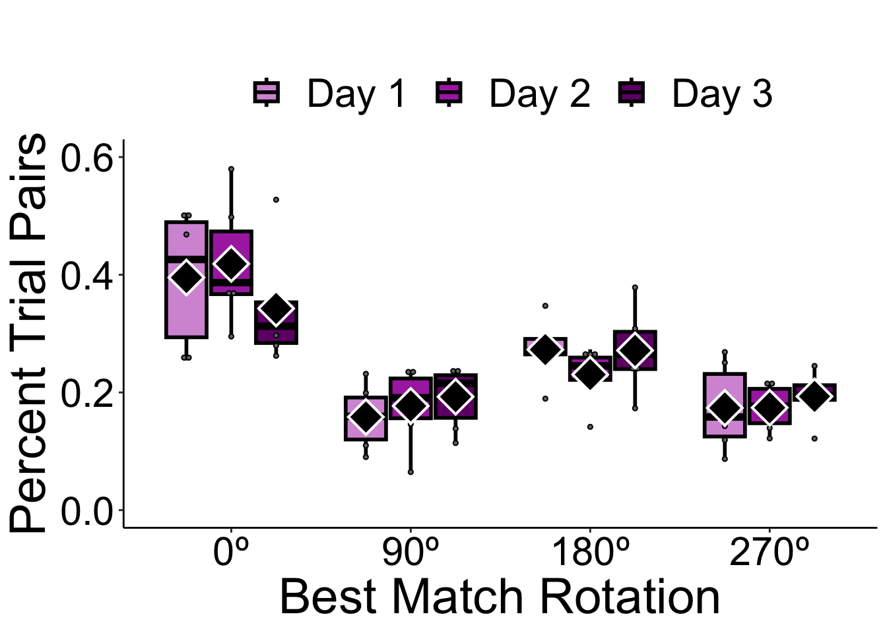
3.1.2 Fig.2C-right) Distribution of bestmatch rotations across days using calcium-imaging recordings {Design (3 Day x S) x (4 Rotaton x S)}
Code
NmRoo = paste0(DirPath,"/", "Fig2CRight ")
Mk.dir(NmRoo)
DT4 <- readRDS(gzcon(url("https://github.com/ManuMi68/MuLaNa2/raw/main/NeuroSpatialData/CalciumNormal.RDS")))
DTp<-copy(DT4)
# Box Plot
ColPer=c("#D599D7", "#AA33B0","#700075")
Grp<- Grph.2023(
DatP = DTp,
Dvp="Proportion", VarX="Rotation",VarFill="Day",
LblsP =c("Cluster Quality", "","Percent Trial Pairs","Best Match Rotation"),
ylmP =c(0,.6),hLin = F,lvIp = 4,GrpSel = c(1:3),wMain=F,
TyGrp="Box", # Bar, Box, Violin, SplitViolin
Wthdot=T, Relleno=T, ResumAd=T,ColPer=ColPer
)
# Descriptive
DTRes<-DTp[,c(N = .N,as.list(summary(Proportion))), by=.(Rotation,Day)]
write.csv2(DTRes,paste0(NmRoo, "/CalciumNormal_Descriptive.csv"))
# AOV
a0 <- aov_ez("Subject", "Proportion", DTp,
within = c("Rotation","Day"))
# Effect size & Mixed
eef<-effectsize::eta_squared(a0, generalized=TRUE)
Mod.1r<-lmer(Proportion~Day * Rotation + (1|Subject),data=DTp)
# Pos Hoc
# Defines orthogonal contrasts from a prioristic perspective
custom <- list(`0.180vs90.270` = c(1,-1, 1,-1),
`0vs180` = c(1, 0,-1, 0),
`90vs270` = c(0, 1, 0,-1)
)
PosH.4w = PosHocAut(Mod.1r, Mod.1r, "Rotation", c("Rotation","emmean"), custom=custom)
# Results
cat("Data Structure:\n");
str(DTp) # Data File
cat("---------------------\n");
kableTabl(DTp,"Data", "")
cat("---------------------\n");
kableTabl(ezPrecis(DTp),"Design Structure", "")
cat("---------------------\n");
kableTabl(DTRes,"Descriptive", "")
cat("Omnibus AOV:\n")
a0
cat("---------------------\n");
cat("Pos Hoc Simple Effects:\n")
PosH.4w$PosHocMM
#kableTabl(PosH.4w$PosHocMM,"Pos Hoc Simple Effects", "")
cat("---------------------\n");
kableTabl(PosH.4w$Means,"Descrptive & CI-95%", "")
cat("---------------------\n");
cat("Exploratory Analysis:\n");
plot(Grp) # Exploratory AnalysisData Structure:
Classes 'data.table' and 'data.frame': 60 obs. of 4 variables:
$ Subject : Factor w/ 5 levels "CMG129_CA1","CMG154_CA1",..: 1 1 1 1 2 2 2 2 3 3 ...
$ Day : Factor w/ 3 levels "Day 1","Day 2",..: 1 1 1 1 1 1 1 1 1 1 ...
$ Rotation : Factor w/ 4 levels "0º","90º","180º",..: 1 2 3 4 1 2 3 4 1 2 ...
$ Proportion: num 0.277 0.211 0.311 0.201 0.264 ...
- attr(*, ".internal.selfref")=<externalptr>
---------------------| Subject | Day | Rotation | Proportion |
|---|---|---|---|
| CMG129_CA1 | Day 1 | 0º | 0.2772 |
| CMG129_CA1 | Day 1 | 90º | 0.2105 |
| CMG129_CA1 | Day 1 | 180º | 0.3113 |
| CMG129_CA1 | Day 1 | 270º | 0.2010 |
| CMG154_CA1 | Day 1 | 0º | 0.2636 |
| CMG154_CA1 | Day 1 | 90º | 0.1574 |
| CMG154_CA1 | Day 1 | 180º | 0.3449 |
| CMG154_CA1 | Day 1 | 270º | 0.2342 |
| CMG161_CA1 | Day 1 | 0º | 0.3264 |
| CMG161_CA1 | Day 1 | 90º | 0.1935 |
| CMG161_CA1 | Day 1 | 180º | 0.2605 |
| CMG161_CA1 | Day 1 | 270º | 0.2197 |
| CMG162_CA1 | Day 1 | 0º | 0.3487 |
| CMG162_CA1 | Day 1 | 90º | 0.1878 |
| CMG162_CA1 | Day 1 | 180º | 0.2653 |
| CMG162_CA1 | Day 1 | 270º | 0.1982 |
| CMG169_CA1 | Day 1 | 0º | 0.3426 |
| CMG169_CA1 | Day 1 | 90º | 0.1829 |
| CMG169_CA1 | Day 1 | 180º | 0.2922 |
| CMG169_CA1 | Day 1 | 270º | 0.1823 |
| CMG129_CA1 | Day 2 | 0º | 0.2966 |
| CMG129_CA1 | Day 2 | 90º | 0.2003 |
| CMG129_CA1 | Day 2 | 180º | 0.2953 |
| CMG129_CA1 | Day 2 | 270º | 0.2078 |
| CMG154_CA1 | Day 2 | 0º | 0.3326 |
| CMG154_CA1 | Day 2 | 90º | 0.2212 |
| CMG154_CA1 | Day 2 | 180º | 0.2705 |
| CMG154_CA1 | Day 2 | 270º | 0.1757 |
| CMG161_CA1 | Day 2 | 0º | 0.3333 |
| CMG161_CA1 | Day 2 | 90º | 0.1655 |
| CMG161_CA1 | Day 2 | 180º | 0.2991 |
| CMG161_CA1 | Day 2 | 270º | 0.2021 |
| CMG162_CA1 | Day 2 | 0º | 0.3400 |
| CMG162_CA1 | Day 2 | 90º | 0.2014 |
| CMG162_CA1 | Day 2 | 180º | 0.2455 |
| CMG162_CA1 | Day 2 | 270º | 0.2131 |
| CMG169_CA1 | Day 2 | 0º | 0.2688 |
| CMG169_CA1 | Day 2 | 90º | 0.1989 |
| CMG169_CA1 | Day 2 | 180º | 0.2842 |
| CMG169_CA1 | Day 2 | 270º | 0.2481 |
| CMG129_CA1 | Day 3 | 0º | 0.2999 |
| CMG129_CA1 | Day 3 | 90º | 0.1906 |
| CMG129_CA1 | Day 3 | 180º | 0.2947 |
| CMG129_CA1 | Day 3 | 270º | 0.2148 |
| CMG154_CA1 | Day 3 | 0º | 0.2971 |
| CMG154_CA1 | Day 3 | 90º | 0.2267 |
| CMG154_CA1 | Day 3 | 180º | 0.2532 |
| CMG154_CA1 | Day 3 | 270º | 0.2230 |
| CMG161_CA1 | Day 3 | 0º | 0.3489 |
| CMG161_CA1 | Day 3 | 90º | 0.1840 |
| CMG161_CA1 | Day 3 | 180º | 0.2597 |
| CMG161_CA1 | Day 3 | 270º | 0.2074 |
| CMG162_CA1 | Day 3 | 0º | 0.3020 |
| CMG162_CA1 | Day 3 | 90º | 0.1950 |
| CMG162_CA1 | Day 3 | 180º | 0.2773 |
| CMG162_CA1 | Day 3 | 270º | 0.2257 |
| CMG169_CA1 | Day 3 | 0º | 0.3303 |
| CMG169_CA1 | Day 3 | 90º | 0.1928 |
| CMG169_CA1 | Day 3 | 180º | 0.2594 |
| CMG169_CA1 | Day 3 | 270º | 0.2175 |
| Note: | |||
---------------------
Data frame dimensions: 60 rows, 4 columns| type | missing | values | min | max | |
|---|---|---|---|---|---|
| Subject | factor | 0 | 5 | CMG129_CA1 | CMG169_CA1 |
| Day | factor | 0 | 3 | Day 1 | Day 3 |
| Rotation | factor | 0 | 4 | 0º | 270º |
| Proportion | numeric | 0 | 60 | 0.1573795 | 0.348903 |
| Note: | |||||
---------------------| Rotation | Day | N | Min. | 1st Qu. | Median | Mean | 3rd Qu. | Max. |
|---|---|---|---|---|---|---|---|---|
| 0º | Day 1 | 5 | 0.2636 | 0.2772 | 0.3264 | 0.3117 | 0.3426 | 0.3487 |
| 90º | Day 1 | 5 | 0.1574 | 0.1829 | 0.1878 | 0.1864 | 0.1935 | 0.2105 |
| 180º | Day 1 | 5 | 0.2605 | 0.2653 | 0.2922 | 0.2948 | 0.3113 | 0.3449 |
| 270º | Day 1 | 5 | 0.1823 | 0.1982 | 0.2010 | 0.2071 | 0.2197 | 0.2342 |
| 0º | Day 2 | 5 | 0.2688 | 0.2966 | 0.3326 | 0.3143 | 0.3333 | 0.3400 |
| 90º | Day 2 | 5 | 0.1655 | 0.1989 | 0.2003 | 0.1975 | 0.2014 | 0.2212 |
| 180º | Day 2 | 5 | 0.2455 | 0.2705 | 0.2842 | 0.2789 | 0.2953 | 0.2991 |
| 270º | Day 2 | 5 | 0.1757 | 0.2021 | 0.2078 | 0.2093 | 0.2131 | 0.2481 |
| 0º | Day 3 | 5 | 0.2971 | 0.2999 | 0.3020 | 0.3157 | 0.3303 | 0.3489 |
| 90º | Day 3 | 5 | 0.1840 | 0.1906 | 0.1928 | 0.1978 | 0.1950 | 0.2267 |
| 180º | Day 3 | 5 | 0.2532 | 0.2594 | 0.2597 | 0.2689 | 0.2773 | 0.2947 |
| 270º | Day 3 | 5 | 0.2074 | 0.2148 | 0.2175 | 0.2177 | 0.2230 | 0.2257 |
| Note: | ||||||||
Omnibus AOV:
Anova Table (Type 3 tests)
Response: Proportion
Effect df MSE F ges p.value
1 Rotation 1.18, 4.74 0.00 71.48 *** .836 <.001
2 Day 2, 8 0.00 0.04 <.001 .959
3 Rotation:Day 6, 24 0.00 0.49 .080 .812
---
Signif. codes: 0 '***' 0.001 '**' 0.01 '*' 0.05 '+' 0.1 ' ' 1
Sphericity correction method: GG
---------------------
Pos Hoc Simple Effects:
contrast estimate SE df t.ratio pHolm pRom
1: 0º - 90º 0.12 0.0089 44 13.48 <.0001 *** <.0001 ***
2: 0º - 180º 0.03 0.0089 44 3.71 .0012 ** .0012 **
3: 0º - 270º 0.10 0.0089 44 11.52 <.0001 *** <.0001 ***
4: 90º - 180º -0.09 0.0089 44 -9.77 <.0001 *** <.0001 ***
5: 90º - 270º -0.02 0.0089 44 -1.96 .0563 . .0563 .
6: 180º - 270º 0.07 0.0089 44 7.81 <.0001 *** <.0001 ***
---------------------| Rotation | emmean | SE | df | lower.CL | upper.CL |
|---|---|---|---|---|---|
| 0º | 0.31 | 0.0063 | 35.2 | 0.30 | 0.33 |
| 90º | 0.19 | 0.0063 | 35.2 | 0.18 | 0.21 |
| 180º | 0.28 | 0.0063 | 35.2 | 0.27 | 0.29 |
| 270º | 0.21 | 0.0063 | 35.2 | 0.20 | 0.22 |
| Note: | |||||
---------------------
Exploratory Analysis: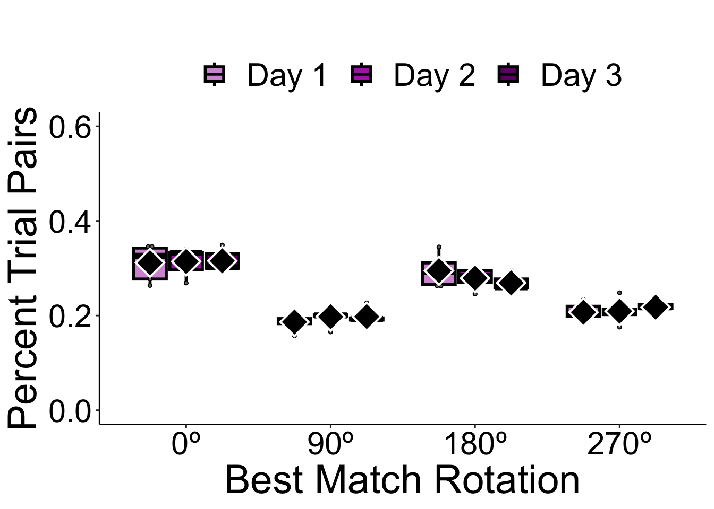
4 3) Different CA1 cells display distinct context sensitivity
4.1 Figure 3. Different CA1 cells display distinct context sensitivity.
Figure 3. Different CA1 cells display distinct context sensitivity. A) Possibilities of neural representations of context recognition. In possibility 1 (left panel) cells align to geometry within each context but display location remapping across context. In possibility 2 (right panel) some cells display identical alignment in both contexts, showing insensitivity to the featural information that distinguish the chambers, while another group of cells show distinct geometric alignment within each chamber but display location remapping across contexts. B) Schematic of map alignment procedure. Since place fields in disoriented animals align to the geometry of the chamber, each cells’ maps are first aligned to the same orientation across trials by selecting the rotation (0° or 180°) of each map that yielded the maximal similarity within each context. Then, an average map of each aligned context is calculated, and the average maps are aligned relative to each other. The comparison that yields the highest correlation is defined as the measure of context similarity. In the schematic, the transparent rotated map shows the lowest similarity score and, therefore, the non-rotated map is selected for alignment. C) Distribution of context similarity scores across context for all cells (n = 2669). The distribution shows a strong leftward skewness, indicating that although spatial maps are highly similar across contexts for most place cells, a moderate proportion of cells remap across contexts (e.g., cells exhibit shifts in their preferred firing locations). A cut-off value of 0.3 was used to separate cells based on context similarity. This value was validated by dividing the context similarity distribution in deciles and evaluating mean correlation corresponding to each decile using a modeling approach (Figure S4). Cells with context similarity equal or below 0.3 were defined as Feature-Sensitive (FS) and cells with context similarity above 0.3 were defined as Feature-Insensitive (FI). D) Proportion of FI and FS cells recorded on day 1 (n = 925), day 2 (n = 915 cells), and day 3 (n = 829). E) Examples of average aligned maps of FI (left) and FS (right) cells from electrophysiology (top) and calcium-imaging (bottom) recordings, along with the corresponding context similarity measures. FI cells show an average context similarity of 0.654 ± 0.003 and FS cells show an average context similarity of 0.160 ± 0.006 (M ± SEM).
Figure S4. Complement of Figure 3. Validation of remapping threshold. A. Scatterplots showing average correlations within and across context for individual cells separated in deciles obtained from the similarity distribution shown in Figure 3C. B. Asymptotic regression model of the overall correlation decile function. The red dot indicates the half life of the function, which coincides with decile 1 (correlations across context between 0 and 0.3) and the root of the function (value that makes the function 0 on the y axis). Finally, in the asymptotic regression model, the relative growth rate is not constant. It attains its peak when Y = 0 and diminishes as Y increases. This suggests that Decile 1, corresponding to Y = 0, represents the point at which the rate of change is maximized. This indicates that that the first decile is the most informative to discriminate across context (Modeling method detailed in the next page).
4.1.1 Fig.S4A) Validation of remapping threshold. Scatterplots showing average correlations within and across context
Code
NmRoo = paste0(DirPath,"/", "FigS4_ForFig3")
Mk.dir(NmRoo)
DT5 <- readRDS(gzcon(url("https://github.com/ManuMi68/MuLaNa2/raw/main/NeuroSpatialData/CalcTetrodePairwiseCorr.RDS")))
DTp<-copy(DT5)
# Correlation Bt-Wit
Efs<-DTp[,cor(avgWithinCorrelation,avgAcrossCorrelation),by=.(Decile)]
setkey(Efs,Decile)
names(Efs)<-c("X", "Y")
cat("Within and across context correlation:\n");
Efs
cat("---------------------\n");
Decil.Labs <- c( "1"= "Decile 1 (.00 < bestCorr <= .30",
"2"= "Decile 2 (.30 < bestCorr <= .42",
"3"= "Decile 3 (.42 < bestCorr <= .51",
"4"= "Decile 4 (.51 < bestCorr <= .58",
"5"= "Decile 5 (.58 < bestCorr <= .64",
"6"= "Decile 6 (.64 < bestCorr <= .69",
"7"= "Decile 7 (.69 < bestCorr <= .75",
"8"= "Decile 8 (.75 < bestCorr <= .80",
"9"= "Decile 9 (.80 < bestCorr <= .86",
"10"= "Decile 10 (.86 < bestCorr <= 1.00"
)
Decil_labeller <- function(variable,value){return(Decil.Labs[value])}
forLab<-data.frame(Decile=Efs$X,avgWithinCorrelation=.1,avgAcrossCorrelation=.9,Label=paste("R = ",round(Efs$Y,2)))
g1<-ggplot2::ggplot(data=DTp, aes(x=avgWithinCorrelation, y=avgAcrossCorrelation, color=factor(Decile)))
g2<- g1 + scale_color_manual(values=decilecolors) + geom_point() + facet_wrap(~Decile, nrow=2,
labeller = labeller(Decile=Decil.Labs)) + theme_bw_MM() +
theme(legend.position="none") + geom_smooth(method = "lm", se = FALSE,col="gray40") +
labs(x="Average Pair-wise Within Correlation", y="Average Pair-wise Across Correlation") +
geom_text(data = forLab, mapping = aes(label = Label), col="black")
ggsave(paste0(NmRoo,"/FigSuppl Graph Reg Deciles.pdf"), g2, width=12, height=6)
cat("Fig.S4A) Scatterplots showing average correlations within and across context:\n")
g2Within and across context correlation:
X Y
1: 1 0.01041047
2: 2 0.49028119
3: 3 0.63913019
4: 4 0.67487723
5: 5 0.74536098
6: 6 0.75306832
7: 7 0.84182376
8: 8 0.79261887
9: 9 0.86816215
10: 10 0.87477532
---------------------
Fig.S4A) Scatterplots showing average correlations within and across context: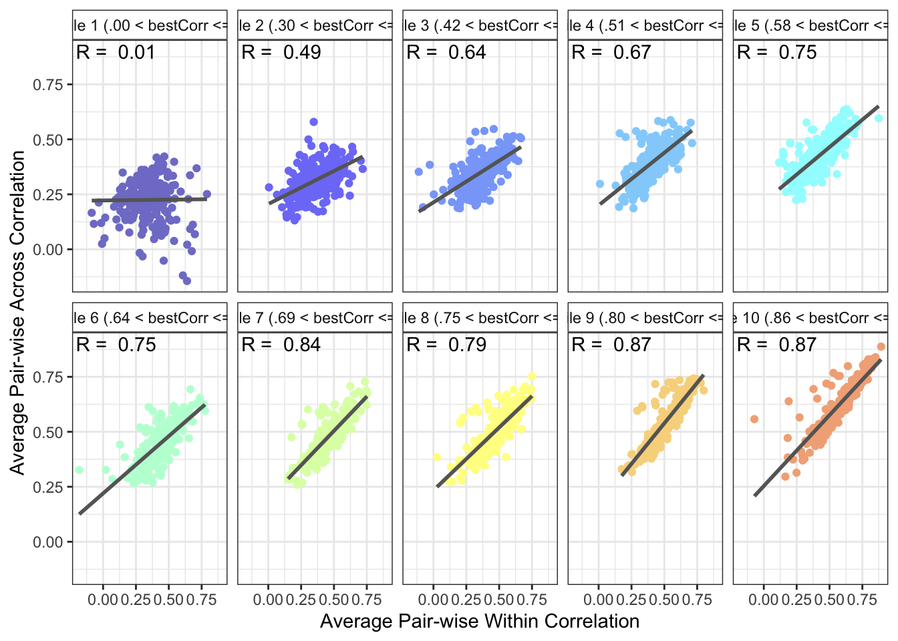
4.1.2 Fig.S4B) Validation of remapping threshold. Asymptotic regression model of the overall correlation decile function
The Asymptotic Regression model (hereinafter AsymReg) is used to model a response y that approaches a horizontal asymptote as x tend to infinity (see Original article: Stevens, W. L., 1951, Asymptotic Regression. Biometrics, 7(3), 247–267. https://doi.org/10.2307/3001809), also known as the Mitscherlich law in agriculture and as the von Bertalanffy law in fisheries research or Monomolecular Growth.
We are going to focus on the model as defined in the SSasymp function of the R’nls library (see pages 511-512 on Pinheiro, J.C. and Bates, D.M., 2000, Mixed-effects models in S and Splus. Springer: Asymreg1<-formula(Y~Asym+(R0-Asym)*exp(-exp(lrc)*X)).
The model parameters are:
Asym𝜙1: The horizontal asymptote on the right side (very large values ofinput).R0𝜙2: The response wheninputis zero.R0𝜙3: The natural logarithm of the rate constant.
We have created the function, AdjMod.23.f, to systematize all computations related to the AsymReg Model.
Code
NmRoo = paste0(DirPath,"/", "FigS4_ForFig3")
Mk.dir(NmRoo)
DT5 <- readRDS(gzcon(url("https://github.com/ManuMi68/MuLaNa2/raw/main/NeuroSpatialData/CalcTetrodePairwiseCorr.RDS")))
DTp<-copy(DT5)
# Correlation Bt-Wit
Efs<-DTp[,cor(avgWithinCorrelation,avgAcrossCorrelation),by=.(Decile)]
setkey(Efs,Decile)
names(Efs)<-c("X", "Y")
# Base model
fit <- NULL
try(fit <- nls(Y ~ SSasymp(X, Asym, R0, lrc), data=Efs, trace = TRUE,control = list(maxiter = 500)))
# Eq0 is the fundamental equation of the model, verified, from which all the rest is derived
Eq0.a=quote(response)
Eq0.b=quote(Asym+(R0-Asym)*exp(-exp(lrc)*input))
Eq0=substitute(a ~ b , list(a = Eq0.a, b = Eq0.b))
Eq0= as.expression(Eq0)
EqTheta = ChangeSymbAR(EqQuo = Eq0,SymRes = c("theta[1]", "theta[2]", "theta[3]"))
EqCDR = ChangeSymbAR(Eq0,letters[seq(1, 3)],c("Asym","R0","exp(lrc)"))
EqTheta2 = ChangeSymbAR(EqQuo = Eq0,SymRes = c("Asymptote", "Origin", "LogRate"),LaX = "Decile",LaY="Correlation")
EqTt.1=quote({"Asymptotic Regression:"})
Eq.1=quote({f[theta](x) == theta[1] + (theta[2]-theta[1])*~e^{-e^{theta[3]}*~x}})
EqLb.1=substitute(a ~ b , list(a = EqTt.1, b = Eq.1))
EqTt.2=quote({"First derivative:"})
Eq.2=quote({f*" '"[theta](x) == {e^{theta[3]}*~(theta[1]-f[theta](x))}})
EqLb.2=substitute(a ~ b , list(a = EqTt.2, b = Eq.2))
EqTt.3=quote({"Params:"})
Eq.3=quote(list(theta[1] == "Asymptote", theta[2] == "Origin", theta[3] == "Log of Rate")~"["*{Rate==e^{theta[3]}}*"]")
EqLb.3=substitute(a ~ b , list(a = EqTt.3, b = Eq.3))
JnEq=list(EqLb.1,EqLb.2,EqLb.3)
print("Asymptotic regression model of the overall correlation decile function:\n")
RsM1<-AdjMod.23.f(LasMedP=Efs, TyLbl=JnEq, xLb="Decile",yLb="Pearson's Correlation", xmaxp=10,yminp=-1)
pdf(paste0(NmRoo,"/FigSuppl Graph AsymReg.pdf"),width = 6,height = 6)
AdjMod.23.f(LasMedP=Efs, TyLbl=JnEq, xLb="Decile",yLb="Pearson's Correlation", xmaxp=10,yminp=-1)
dev.off()
cat("Table S4: Details of model fit Asymptotic regression:\n" )
RsM1$forAPA2
MkKblMod(RsM1,NmRoo,"",EqTheta2)
cat("Half-life stimation from Asymptotic Regression (xMed=log(2)/(exp(lrcStim)):\n" )
RsM1$Par
cat("Root Value from Taylor Polynomial:\n" )
RsM1$root0.08881659 (1.77e+00): par = (-1.541691 1.053557 0.01361655)
0.01639857 (1.35e-03): par = (-0.3535988 0.8265563 -0.7784392)
0.01639855 (3.57e-04): par = (-0.3532509 0.8265209 -0.7788876)
0.01639855 (9.45e-05): par = (-0.3531587 0.8265115 -0.7790065)
0.01639855 (2.50e-05): par = (-0.3531343 0.826509 -0.779038)
0.01639855 (6.63e-06): par = (-0.3531279 0.8265084 -0.7790463)
0.01639855 (4.37e-06): par = (0.8265084 -0.7790463 -0.3531279)
[1] "Asymptotic regression model of the overall correlation decile function:\n"
0.08881659 (1.77e+00): par = (-1.541691 1.053557 0.01361655)
0.01639857 (1.35e-03): par = (-0.3535988 0.8265563 -0.7784392)
0.01639855 (3.57e-04): par = (-0.3532509 0.8265209 -0.7788876)
0.01639855 (9.45e-05): par = (-0.3531587 0.8265115 -0.7790065)
0.01639855 (2.50e-05): par = (-0.3531343 0.826509 -0.779038)
0.01639855 (6.63e-06): par = (-0.3531279 0.8265084 -0.7790463)
0.01639855 (4.37e-06): par = (0.8265084 -0.7790463 -0.3531279)
[1] "Salió a la primera, estimando los valores iniciales"
0.08881659 (1.77e+00): par = (-1.541691 1.053557 0.01361655)
0.01639857 (1.35e-03): par = (-0.3535988 0.8265563 -0.7784392)
0.01639855 (3.57e-04): par = (-0.3532509 0.8265209 -0.7788876)
0.01639855 (9.45e-05): par = (-0.3531587 0.8265115 -0.7790065)
0.01639855 (2.50e-05): par = (-0.3531343 0.826509 -0.779038)
0.01639855 (6.63e-06): par = (-0.3531279 0.8265084 -0.7790463)
0.01639855 (4.37e-06): par = (0.8265084 -0.7790463 -0.3531279)
[1] "Salió a la primera, estimando los valores iniciales"
$Type
[1] "RegAs1"
$XPred
[1] 0.00000000 0.01001001 0.02002002 0.03003003 0.04004004 0.05005005
[7] 0.06006006 0.07007007 0.08008008 0.09009009 0.10010010 0.11011011
[13] 0.12012012 0.13013013 0.14014014 0.15015015 0.16016016 0.17017017
[19] 0.18018018 0.19019019 0.20020020 0.21021021 0.22022022 0.23023023
[25] 0.24024024 0.25025025 0.26026026 0.27027027 0.28028028 0.29029029
[31] 0.30030030 0.31031031 0.32032032 0.33033033 0.34034034 0.35035035
[37] 0.36036036 0.37037037 0.38038038 0.39039039 0.40040040 0.41041041
[43] 0.42042042 0.43043043 0.44044044 0.45045045 0.46046046 0.47047047
[49] 0.48048048 0.49049049 0.50050050 0.51051051 0.52052052 0.53053053
[55] 0.54054054 0.55055055 0.56056056 0.57057057 0.58058058 0.59059059
[61] 0.60060060 0.61061061 0.62062062 0.63063063 0.64064064 0.65065065
[67] 0.66066066 0.67067067 0.68068068 0.69069069 0.70070070 0.71071071
[73] 0.72072072 0.73073073 0.74074074 0.75075075 0.76076076 0.77077077
[79] 0.78078078 0.79079079 0.80080080 0.81081081 0.82082082 0.83083083
[85] 0.84084084 0.85085085 0.86086086 0.87087087 0.88088088 0.89089089
[91] 0.90090090 0.91091091 0.92092092 0.93093093 0.94094094 0.95095095
[97] 0.96096096 0.97097097 0.98098098 0.99099099 1.00100100 1.01101101
[103] 1.02102102 1.03103103 1.04104104 1.05105105 1.06106106 1.07107107
[109] 1.08108108 1.09109109 1.10110110 1.11111111 1.12112112 1.13113113
[115] 1.14114114 1.15115115 1.16116116 1.17117117 1.18118118 1.19119119
[121] 1.20120120 1.21121121 1.22122122 1.23123123 1.24124124 1.25125125
[127] 1.26126126 1.27127127 1.28128128 1.29129129 1.30130130 1.31131131
[133] 1.32132132 1.33133133 1.34134134 1.35135135 1.36136136 1.37137137
[139] 1.38138138 1.39139139 1.40140140 1.41141141 1.42142142 1.43143143
[145] 1.44144144 1.45145145 1.46146146 1.47147147 1.48148148 1.49149149
[151] 1.50150150 1.51151151 1.52152152 1.53153153 1.54154154 1.55155155
[157] 1.56156156 1.57157157 1.58158158 1.59159159 1.60160160 1.61161161
[163] 1.62162162 1.63163163 1.64164164 1.65165165 1.66166166 1.67167167
[169] 1.68168168 1.69169169 1.70170170 1.71171171 1.72172172 1.73173173
[175] 1.74174174 1.75175175 1.76176176 1.77177177 1.78178178 1.79179179
[181] 1.80180180 1.81181181 1.82182182 1.83183183 1.84184184 1.85185185
[187] 1.86186186 1.87187187 1.88188188 1.89189189 1.90190190 1.91191191
[193] 1.92192192 1.93193193 1.94194194 1.95195195 1.96196196 1.97197197
[199] 1.98198198 1.99199199 2.00200200 2.01201201 2.02202202 2.03203203
[205] 2.04204204 2.05205205 2.06206206 2.07207207 2.08208208 2.09209209
[211] 2.10210210 2.11211211 2.12212212 2.13213213 2.14214214 2.15215215
[217] 2.16216216 2.17217217 2.18218218 2.19219219 2.20220220 2.21221221
[223] 2.22222222 2.23223223 2.24224224 2.25225225 2.26226226 2.27227227
[229] 2.28228228 2.29229229 2.30230230 2.31231231 2.32232232 2.33233233
[235] 2.34234234 2.35235235 2.36236236 2.37237237 2.38238238 2.39239239
[241] 2.40240240 2.41241241 2.42242242 2.43243243 2.44244244 2.45245245
[247] 2.46246246 2.47247247 2.48248248 2.49249249 2.50250250 2.51251251
[253] 2.52252252 2.53253253 2.54254254 2.55255255 2.56256256 2.57257257
[259] 2.58258258 2.59259259 2.60260260 2.61261261 2.62262262 2.63263263
[265] 2.64264264 2.65265265 2.66266266 2.67267267 2.68268268 2.69269269
[271] 2.70270270 2.71271271 2.72272272 2.73273273 2.74274274 2.75275275
[277] 2.76276276 2.77277277 2.78278278 2.79279279 2.80280280 2.81281281
[283] 2.82282282 2.83283283 2.84284284 2.85285285 2.86286286 2.87287287
[289] 2.88288288 2.89289289 2.90290290 2.91291291 2.92292292 2.93293293
[295] 2.94294294 2.95295295 2.96296296 2.97297297 2.98298298 2.99299299
[301] 3.00300300 3.01301301 3.02302302 3.03303303 3.04304304 3.05305305
[307] 3.06306306 3.07307307 3.08308308 3.09309309 3.10310310 3.11311311
[313] 3.12312312 3.13313313 3.14314314 3.15315315 3.16316316 3.17317317
[319] 3.18318318 3.19319319 3.20320320 3.21321321 3.22322322 3.23323323
[325] 3.24324324 3.25325325 3.26326326 3.27327327 3.28328328 3.29329329
[331] 3.30330330 3.31331331 3.32332332 3.33333333 3.34334334 3.35335335
[337] 3.36336336 3.37337337 3.38338338 3.39339339 3.40340340 3.41341341
[343] 3.42342342 3.43343343 3.44344344 3.45345345 3.46346346 3.47347347
[349] 3.48348348 3.49349349 3.50350350 3.51351351 3.52352352 3.53353353
[355] 3.54354354 3.55355355 3.56356356 3.57357357 3.58358358 3.59359359
[361] 3.60360360 3.61361361 3.62362362 3.63363363 3.64364364 3.65365365
[367] 3.66366366 3.67367367 3.68368368 3.69369369 3.70370370 3.71371371
[373] 3.72372372 3.73373373 3.74374374 3.75375375 3.76376376 3.77377377
[379] 3.78378378 3.79379379 3.80380380 3.81381381 3.82382382 3.83383383
[385] 3.84384384 3.85385385 3.86386386 3.87387387 3.88388388 3.89389389
[391] 3.90390390 3.91391391 3.92392392 3.93393393 3.94394394 3.95395395
[397] 3.96396396 3.97397397 3.98398398 3.99399399 4.00400400 4.01401401
[403] 4.02402402 4.03403403 4.04404404 4.05405405 4.06406406 4.07407407
[409] 4.08408408 4.09409409 4.10410410 4.11411411 4.12412412 4.13413413
[415] 4.14414414 4.15415415 4.16416416 4.17417417 4.18418418 4.19419419
[421] 4.20420420 4.21421421 4.22422422 4.23423423 4.24424424 4.25425425
[427] 4.26426426 4.27427427 4.28428428 4.29429429 4.30430430 4.31431431
[433] 4.32432432 4.33433433 4.34434434 4.35435435 4.36436436 4.37437437
[439] 4.38438438 4.39439439 4.40440440 4.41441441 4.42442442 4.43443443
[445] 4.44444444 4.45445445 4.46446446 4.47447447 4.48448448 4.49449449
[451] 4.50450450 4.51451451 4.52452452 4.53453453 4.54454454 4.55455455
[457] 4.56456456 4.57457457 4.58458458 4.59459459 4.60460460 4.61461461
[463] 4.62462462 4.63463463 4.64464464 4.65465465 4.66466466 4.67467467
[469] 4.68468468 4.69469469 4.70470470 4.71471471 4.72472472 4.73473473
[475] 4.74474474 4.75475475 4.76476476 4.77477477 4.78478478 4.79479479
[481] 4.80480480 4.81481481 4.82482482 4.83483483 4.84484484 4.85485485
[487] 4.86486486 4.87487487 4.88488488 4.89489489 4.90490490 4.91491491
[493] 4.92492492 4.93493493 4.94494494 4.95495495 4.96496496 4.97497497
[499] 4.98498498 4.99499499 5.00500501 5.01501502 5.02502503 5.03503504
[505] 5.04504505 5.05505506 5.06506507 5.07507508 5.08508509 5.09509510
[511] 5.10510511 5.11511512 5.12512513 5.13513514 5.14514515 5.15515516
[517] 5.16516517 5.17517518 5.18518519 5.19519520 5.20520521 5.21521522
[523] 5.22522523 5.23523524 5.24524525 5.25525526 5.26526527 5.27527528
[529] 5.28528529 5.29529530 5.30530531 5.31531532 5.32532533 5.33533534
[535] 5.34534535 5.35535536 5.36536537 5.37537538 5.38538539 5.39539540
[541] 5.40540541 5.41541542 5.42542543 5.43543544 5.44544545 5.45545546
[547] 5.46546547 5.47547548 5.48548549 5.49549550 5.50550551 5.51551552
[553] 5.52552553 5.53553554 5.54554555 5.55555556 5.56556557 5.57557558
[559] 5.58558559 5.59559560 5.60560561 5.61561562 5.62562563 5.63563564
[565] 5.64564565 5.65565566 5.66566567 5.67567568 5.68568569 5.69569570
[571] 5.70570571 5.71571572 5.72572573 5.73573574 5.74574575 5.75575576
[577] 5.76576577 5.77577578 5.78578579 5.79579580 5.80580581 5.81581582
[583] 5.82582583 5.83583584 5.84584585 5.85585586 5.86586587 5.87587588
[589] 5.88588589 5.89589590 5.90590591 5.91591592 5.92592593 5.93593594
[595] 5.94594595 5.95595596 5.96596597 5.97597598 5.98598599 5.99599600
[601] 6.00600601 6.01601602 6.02602603 6.03603604 6.04604605 6.05605606
[607] 6.06606607 6.07607608 6.08608609 6.09609610 6.10610611 6.11611612
[613] 6.12612613 6.13613614 6.14614615 6.15615616 6.16616617 6.17617618
[619] 6.18618619 6.19619620 6.20620621 6.21621622 6.22622623 6.23623624
[625] 6.24624625 6.25625626 6.26626627 6.27627628 6.28628629 6.29629630
[631] 6.30630631 6.31631632 6.32632633 6.33633634 6.34634635 6.35635636
[637] 6.36636637 6.37637638 6.38638639 6.39639640 6.40640641 6.41641642
[643] 6.42642643 6.43643644 6.44644645 6.45645646 6.46646647 6.47647648
[649] 6.48648649 6.49649650 6.50650651 6.51651652 6.52652653 6.53653654
[655] 6.54654655 6.55655656 6.56656657 6.57657658 6.58658659 6.59659660
[661] 6.60660661 6.61661662 6.62662663 6.63663664 6.64664665 6.65665666
[667] 6.66666667 6.67667668 6.68668669 6.69669670 6.70670671 6.71671672
[673] 6.72672673 6.73673674 6.74674675 6.75675676 6.76676677 6.77677678
[679] 6.78678679 6.79679680 6.80680681 6.81681682 6.82682683 6.83683684
[685] 6.84684685 6.85685686 6.86686687 6.87687688 6.88688689 6.89689690
[691] 6.90690691 6.91691692 6.92692693 6.93693694 6.94694695 6.95695696
[697] 6.96696697 6.97697698 6.98698699 6.99699700 7.00700701 7.01701702
[703] 7.02702703 7.03703704 7.04704705 7.05705706 7.06706707 7.07707708
[709] 7.08708709 7.09709710 7.10710711 7.11711712 7.12712713 7.13713714
[715] 7.14714715 7.15715716 7.16716717 7.17717718 7.18718719 7.19719720
[721] 7.20720721 7.21721722 7.22722723 7.23723724 7.24724725 7.25725726
[727] 7.26726727 7.27727728 7.28728729 7.29729730 7.30730731 7.31731732
[733] 7.32732733 7.33733734 7.34734735 7.35735736 7.36736737 7.37737738
[739] 7.38738739 7.39739740 7.40740741 7.41741742 7.42742743 7.43743744
[745] 7.44744745 7.45745746 7.46746747 7.47747748 7.48748749 7.49749750
[751] 7.50750751 7.51751752 7.52752753 7.53753754 7.54754755 7.55755756
[757] 7.56756757 7.57757758 7.58758759 7.59759760 7.60760761 7.61761762
[763] 7.62762763 7.63763764 7.64764765 7.65765766 7.66766767 7.67767768
[769] 7.68768769 7.69769770 7.70770771 7.71771772 7.72772773 7.73773774
[775] 7.74774775 7.75775776 7.76776777 7.77777778 7.78778779 7.79779780
[781] 7.80780781 7.81781782 7.82782783 7.83783784 7.84784785 7.85785786
[787] 7.86786787 7.87787788 7.88788789 7.89789790 7.90790791 7.91791792
[793] 7.92792793 7.93793794 7.94794795 7.95795796 7.96796797 7.97797798
[799] 7.98798799 7.99799800 8.00800801 8.01801802 8.02802803 8.03803804
[805] 8.04804805 8.05805806 8.06806807 8.07807808 8.08808809 8.09809810
[811] 8.10810811 8.11811812 8.12812813 8.13813814 8.14814815 8.15815816
[817] 8.16816817 8.17817818 8.18818819 8.19819820 8.20820821 8.21821822
[823] 8.22822823 8.23823824 8.24824825 8.25825826 8.26826827 8.27827828
[829] 8.28828829 8.29829830 8.30830831 8.31831832 8.32832833 8.33833834
[835] 8.34834835 8.35835836 8.36836837 8.37837838 8.38838839 8.39839840
[841] 8.40840841 8.41841842 8.42842843 8.43843844 8.44844845 8.45845846
[847] 8.46846847 8.47847848 8.48848849 8.49849850 8.50850851 8.51851852
[853] 8.52852853 8.53853854 8.54854855 8.55855856 8.56856857 8.57857858
[859] 8.58858859 8.59859860 8.60860861 8.61861862 8.62862863 8.63863864
[865] 8.64864865 8.65865866 8.66866867 8.67867868 8.68868869 8.69869870
[871] 8.70870871 8.71871872 8.72872873 8.73873874 8.74874875 8.75875876
[877] 8.76876877 8.77877878 8.78878879 8.79879880 8.80880881 8.81881882
[883] 8.82882883 8.83883884 8.84884885 8.85885886 8.86886887 8.87887888
[889] 8.88888889 8.89889890 8.90890891 8.91891892 8.92892893 8.93893894
[895] 8.94894895 8.95895896 8.96896897 8.97897898 8.98898899 8.99899900
[901] 9.00900901 9.01901902 9.02902903 9.03903904 9.04904905 9.05905906
[907] 9.06906907 9.07907908 9.08908909 9.09909910 9.10910911 9.11911912
[913] 9.12912913 9.13913914 9.14914915 9.15915916 9.16916917 9.17917918
[919] 9.18918919 9.19919920 9.20920921 9.21921922 9.22922923 9.23923924
[925] 9.24924925 9.25925926 9.26926927 9.27927928 9.28928929 9.29929930
[931] 9.30930931 9.31931932 9.32932933 9.33933934 9.34934935 9.35935936
[937] 9.36936937 9.37937938 9.38938939 9.39939940 9.40940941 9.41941942
[943] 9.42942943 9.43943944 9.44944945 9.45945946 9.46946947 9.47947948
[949] 9.48948949 9.49949950 9.50950951 9.51951952 9.52952953 9.53953954
[955] 9.54954955 9.55955956 9.56956957 9.57957958 9.58958959 9.59959960
[961] 9.60960961 9.61961962 9.62962963 9.63963964 9.64964965 9.65965966
[967] 9.66966967 9.67967968 9.68968969 9.69969970 9.70970971 9.71971972
[973] 9.72972973 9.73973974 9.74974975 9.75975976 9.76976977 9.77977978
[979] 9.78978979 9.79979980 9.80980981 9.81981982 9.82982983 9.83983984
[985] 9.84984985 9.85985986 9.86986987 9.87987988 9.88988989 9.89989990
[991] 9.90990991 9.91991992 9.92992993 9.93993994 9.94994995 9.95995996
[997] 9.96996997 9.97997998 9.98998999 10.00000000
$Model
Nonlinear regression model
model: Y ~ SSasymp(X, Asym, R0, lrc)
data: LasMed
Asym R0 lrc
0.8265 -0.7790 -0.3531
residual sum-of-squares: 0.0164
Number of iterations to convergence: 0
Achieved convergence tolerance: 4.369e-06
$Rsq
[1] 0.973
$SE
[1] 0.04840093
$Summ
Formula: Y ~ SSasymp(X, Asym, R0, lrc)
Parameters:
Estimate Std. Error t value Pr(>|t|)
Asym 0.82651 0.02372 34.843 4.16e-09 ***
R0 -0.77905 0.21339 -3.651 0.00817 **
lrc -0.35313 0.14912 -2.368 0.04975 *
---
Signif. codes: 0 '***' 0.001 '**' 0.01 '*' 0.05 '.' 0.1 ' ' 1
Residual standard error: 0.0484 on 7 degrees of freedom
Number of iterations to convergence: 0
Achieved convergence tolerance: 4.369e-06
$Par
Asym R0 lrc Rate XHalf y_Xhalf
0.82650836 -0.77904629 -0.35312785 0.70248737 0.98670411 0.02373103
$forAPA1
GenTypeM ClasType Model AIC LogLik SE
1: E.Mod AsymRegres SSasymp Orig -27.75 17.88 0.05
coefs
1: Asym= 0.83*; R0= -0.78*; lrc= -0.35*
$forAPA2
[1] "AIC= -27.75; LogLik= 17.88; SE= 0.05; Asym= 0.83*; R0= -0.78*; lrc= -0.35*"
$BondAj
$BondAj$coefs
Asym R0 lrc
0.8265084 -0.7790463 -0.3531279
$BondAj$stdErr
Asym R0 lrc
0.02372107 0.21339020 0.14911908
$BondAj$Resid
[1] -0.020783746 0.057733000 0.007770651 -0.054963835 -0.033263078
[6] -0.049720471 0.027064933 -0.028069336 0.044536810 0.049695071
attr(,"label")
[1] "Residuals"
$BondAj$R2
[1] 0.9729693
$BondAj$R2.Adj
[1] 0.9652463
$BondAj$SE
[1] 0.04840093
$BondAj$LogLik
[1] 17.87635
$BondAj$AIC
[1] -27.7527
$root
$root$an
2.5 % 97.5 % an
a0 -7.976286e-02 0.1063886044 0.0133128741
a1 4.579950e-01 0.9738095603 0.7159022890
a2 -5.116167e-01 -0.1030375990 -0.3073271388
a3 4.628450e-03 0.1263130832 0.0654707665
a4 -1.415689e-02 0.0010380332 -0.0065594285
a5 -8.840457e-05 0.0005837892 0.0002476923
$root$froot
[1] 1 1
$extr
$extr$an
2.5 % 97.5 % an
a0 7.618229e-01 0.9213571482 0.8415900356
a1 -4.965187e-02 0.0658212466 0.0080846874
a2 -5.475071e-02 0.0814216493 0.0133354697
a3 -2.001420e-02 0.0481984960 0.0140921493
a4 -2.578724e-03 0.0092752540 0.0033482649
a5 -8.840457e-05 0.0005837892 0.0002476923
$extr$extr
[1] 9 9
$inflexi
$inflexi$an
2.5 % 97.5 % an
a0 7.084863e-01 0.8272885274 0.7678873922
a1 4.659640e-04 0.0940594015 0.0472626828
a2 -1.893043e-02 0.0198014387 0.0004355020
a3 -1.194905e-02 0.0043596060 -0.0037947197
a4 -1.481059e-03 0.0007468192 -0.0003671201
a5 -8.840457e-05 0.0005837892 0.0002476923
$inflexi$finfl
[1] 6 6
quartz_off_screen
2
Table S4: Details of model fit Asymptotic regression:
[1] "AIC= -27.75; LogLik= 17.88; SE= 0.05; Asym= 0.83*; R0= -0.78*; lrc= -0.35*"| term | Estimate | Std. Error | t value | Pr(>|t|) |
|---|---|---|---|---|
| Asym | 0.8300 | 0.02 | 34.84 | 0.0000*** |
| R0 | -0.7800 | 0.21 | -3.65 | 0.0082** |
| lrc | -0.3500 | 0.15 | -2.37 | 0.0497* |
| Rate | 0.7000 | |||
| XHalf | 0.9900 | |||
| RSE | 0.0484 | |||
| R2 | 0.9730 | |||
| Note: | ||||
| Correlation ~ Asymptote + (Origin - Asymptote) * exp(-exp(LogRate) * Decile) | ||||
| Signif. codes: 0 '***' 0.001 '**' 0.01 '*' 0.05 '.' 0.1 ' ' 1 |
Half-life stimation from Asymptotic Regression (xMed=log(2)/(exp(lrcStim)):
Asym R0 lrc Rate XHalf y_Xhalf
0.82650836 -0.77904629 -0.35312785 0.70248737 0.98670411 0.02373103
Root Value from Taylor Polynomial:
$an
2.5 % 97.5 % an
a0 -7.976286e-02 0.1063886044 0.0133128741
a1 4.579950e-01 0.9738095603 0.7159022890
a2 -5.116167e-01 -0.1030375990 -0.3073271388
a3 4.628450e-03 0.1263130832 0.0654707665
a4 -1.415689e-02 0.0010380332 -0.0065594285
a5 -8.840457e-05 0.0005837892 0.0002476923
$froot
[1] 1 1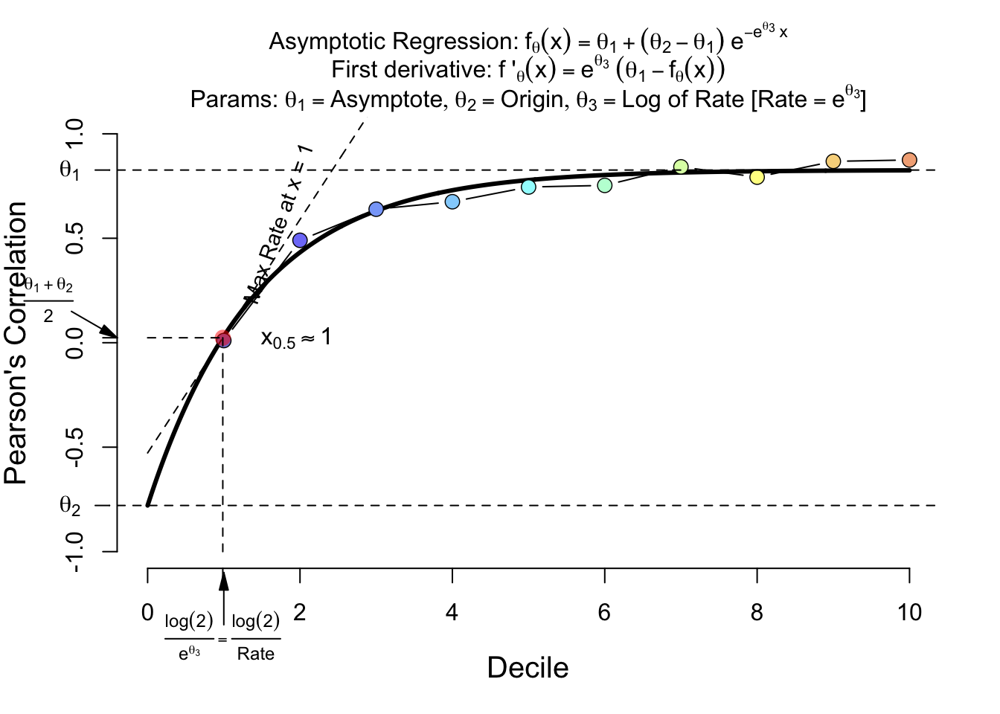
4.1.2.1 Fig.S4B) The relative growth rate in the Asymptotic regression model
Due to its biological meaning, the most widespread parameterisation of AsymReg is:
Y=a−(a−b)exp(−cX) where a is the maximum attainable Y, b is Y at x=0
and c is proportional to the relative rate of Y increase while X increases.
Indeed, we can see that the first derivative is
[D(expression(a - (a - b) * exp (- c * X)), “X”)]:
(a - b) * (exp(-c * X) * c); that is
Y′=c(a−Y)
This conclusion is demonstrated as follows:
Y = Asym + (R0 - Asym) * exp(-exp(lrc) * X)
Y’= -((R0 - Asym) * (exp(-exp(lrc) * X) * exp(lrc)))
c = exp(lrc)
- Y = Asym + (R0 - Asym) * exp(-c * X) = Asym + D
- D = Y - Asym
- Y’ = -((R0 - Asym) * (exp(-c * X) * c ))
- Y’ = (-1)* (R0 - Asym) * exp(-c * X) * c
- Y’/-c = (R0 - Asym) * exp(-c * X)
- Y’/-c = Y - Asym
- Y’ = -c * (Y-Asym) = c * (Asym - Y)
- Proved: Y′=c(a−Y); taking into account that a refers to Asym (the Asymptote or plateau).
The first derivative of a function gives the expression for the line tangent to the curve of the function. This expression allows us to find the instantaneous rate of change at any point on the curve.
We will now show that the relative growth rate in the asymptotic regression model (first derivative) is not constant, reaching its maximum value when Y = 0 and decreasing as Y increases.*
That is, the absolute ratio of increase of Y at a given X is not constant, but depends on the attained value of Y: \(\displaystyle \frac{\partial Y}{\partial X} = c(a-Y)\).
And, for the relative rate of increase of Y, we see that: \(\displaystyle \frac{\partial Y}{\partial X} \frac{1}{Y} = c\frac{(a-Y)}{Y}\).
It means that the relative rate of increase of Y is maximum at the beginning and approaches 0 when Y approaches the Asymptote a.
Code
cat("1) In the first place we extract the parameters, and other values of interest, of the AsymReg model from the variable **fit**\n")- In the first place we extract the parameters, and other values of interest, of the AsymReg model from the variable fit
Code
XMax=tail(Efs$X,1)
xPred <- seq(0, XMax, length = 1000);
theta1=a=Asymptote= Asym=AsymStim=coefficients(fit)[[1]]
theta2=b=Origin= R0=R0Stim=coefficients(fit)[[2]]
theta3=LogRate= lrc=lrcStim=coefficients(fit)[[3]]
xMed=log(2)/(exp(lrcStim))
PredxMed=predict(fit, data.frame(X = xMed))
Rate=c= exp(lrcStim)
cat(paste0("theta1 =",theta1,"\n"));theta1 =0.826508357170191
Code
cat(paste0("theta2 =",theta2,"\n"))theta2 =-0.779046293308579
Code
cat(paste0("theta3 =",theta3,"\n"))theta3 =-0.353127853590835
Code
cat(paste0("Half-life =",xMed,"\n"))Half-life =0.986704114674061
Code
cat(paste0("Rate =",Rate,"\n"))Rate =0.702487372102338
Code
cat("2) Now, we represent the values predicted by the AsymReg model\n")- Now, we represent the values predicted by the AsymReg model
Code
PredMod=predict(fit, data.frame(X = xPred))
plot(xPred, PredMod,lty=1,lwd=3,type="l")
cat("3) We get the relative growth rate in the AsymReg Model\n
from the first derivative (`DrvAsymReg` function), estimate for the Decile 1 value.\n
and plot them on a graph\n")We get the relative growth rate in the AsymReg Model
from the first derivative (
DrvAsymRegfunction), estimate for the Decile 1 value.and plot them on a graph
Code
newx <- 1
pred0 <- data.frame(x=newx, y=AsymRegMM(newx,AsymStim,R0Stim,c))
pred1 <- data.frame(x=newx, y=DrvAsymReg(newx,AsymStim,R0Stim,c))
yint <- pred0$y - (pred1$y*newx)
xint <- -yint/pred1$y
lines(xPred, yint + pred1$y*xPred, lty=2,lwd=2, col="red") # tangent (1st deriv. of spline at newx)
cat("4) We repeat these rate estimates for the rest of the Deciles (from 2 to 10)\n
and incorporate these estimates in the graph\n")We repeat these rate estimates for the rest of the Deciles (from 2 to 10)
and incorporate these estimates in the graph
Code
for (newx in 2:10) {
pred0 <- data.frame(x=newx, y=AsymRegMM(newx,AsymStim,R0Stim,c))
pred1 <- data.frame(x=newx, y=DrvAsymReg(newx,AsymStim,R0Stim,c))
yint <- pred0$y - (pred1$y*newx)
xint <- -yint/pred1$y
lines(xPred, yint + pred1$y*xPred, lty=2,lwd=1) # tangent (1st deriv. of spline at newx)
}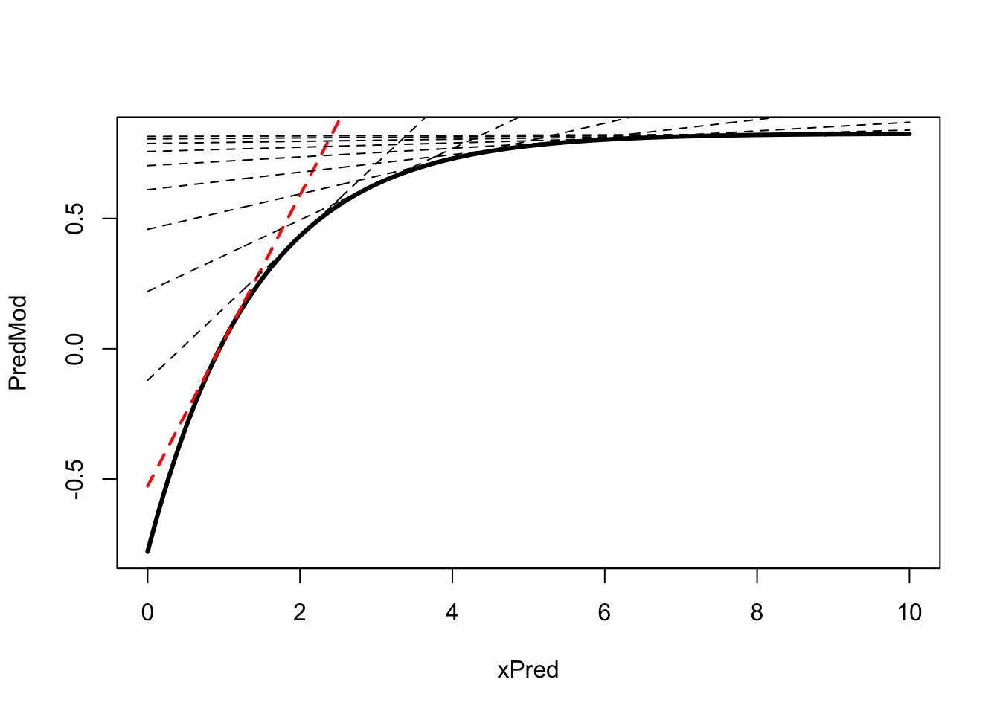
It can be seen that the straight line with the point at which the rate of change is maximized (red color) is that which corresponds to the Decile 1, when Y = 0.